3GPP TR 38.785 V17.0.0 (2022-06)
Technical Report
3rd Generation Partnership Project;
Technical Specification Group Radio Access Network;
User Equipment (UE) radio transmission and reception for enhanced NR sidelink;
(Release 17)
The present document has been developed within the 3rd Generation
Partnership Project (3GPP TM) and may be further elaborated
for the purposes of 3GPP.
The present document has not been subject to any approval process by the
3GPP Organizational Partners and shall not be implemented.
This Report is provided for future development work within 3GPP only.
The Organizational Partners accept no liability for any use of this
Specification.
Specifications and Reports for implementation of the 3GPP TM
system should be obtained via the 3GPP Organizational Partners'
Publications Offices.
Keywords
<NR V2X (vehicle-to-everything), Sidelink, Public safety, Proximity based Services>
3GPP
Postal address
3GPP support office address
650 Route des Lucioles - Sophia Antipolis
Valbonne - FRANCE
Tel.: +33 4 92 94 42 00 Fax: +33 4 93 65 47 16
Internet
http://www.3gpp.org
Copyright Notification
No part may be reproduced except as authorized by written
permission.
The copyright and the foregoing restriction extend to reproduction in
all media.
© 2022, 3GPP Organizational Partners (ARIB, ATIS, CCSA, ETSI, TSDSI, TTA, TTC).
All rights reserved.
UMTS™ is a Trade Mark of ETSI registered for the benefit of its members
3GPP™ is a Trade Mark of ETSI registered for the benefit of its
Members and of the 3GPP Organizational Partners
LTE™ is a Trade Mark of ETSI registered for the benefit of its Members
and of the 3GPP Organizational Partners
GSM® and the GSM logo are registered and owned by the GSM Association
Foreword 6
1 Scope 7
2 References 7
3 Definitions, symbols and abbreviations 7
3.1 Definitions 7
3.2 Symbols 8
3.3 Abbreviations 10
4 Background 11
4.1 Justification 11
4.2 Objective 12
4.3 NR sidelink enhancement operating scenarios 13
4.3.1 General description 13
4.3.2 Operation Aspects 13
4.3.3 Synchronization reference source 14
5 Leftover RF requirements 17
5.1 Power class 2 sidelink UE 17
5.1.1 Coexistence evaluation for PC2 SL UE in licensed band 17
5.1.1.1 Coexistence evaluation scenarios 17
5.1.1.2 Coexistence simulations assumptions 17
5.1.1.2.1 Layout model 17
5.1.1.2.2 Simulation parameters 17
5.1.1.2.3 ACLR and ACS 19
5.1.1.2.4 Power control 19
5.1.1.3 Coexistence results 20
5.1.1.3.1 Scenario A 20
5.1.1.3.2 Scenario B 20
5.1.2 PC2 NR V2X UE RF requirements for single carrier 22
5.1.2.1 Maximum output power for NR V2X UE 22
5.1.2.2 UE maximum output power reduction 23
5.1.2.2.1 MPR for Power class 2 V2X UE 24
5.1.2.3 UE maximum output power with additional requirements 25
5.1.2.3.1 A-MPR for NS_33 26
5.2 Intra-band V2X operation in a licensed band 27
5.2.1 Intra-band V2X operation scenarios and basic assumptions 27
5.2.2 Coexistence evaluation 28
5.2.2.1 Coexistence evaluation scenarios 28
5.2.2.2 Conclusion of Coexistence evaluations 28
5.2.3 Intra-band V2X operation with TDM operation 29
5.2.3.1 Operating bands for intra-band V2X operation with TDM operation 29
5.2.3.2 Tx requirements for intra-band V2X operation with TDM operation 29
5.2.3.2.1 Additional Tx requirements for TDM operation 29
5.2.3.3 Other Tx/Rx requirements for intra-band V2X operation with TDM operation 32
5.2.4 Intra-band contiguous V2X con-current operation with FDM operation 32
5.2.4.1 Configuration for intra-band contiguous V2X con-current operation with FDM operation 32
5.2.4.2 Tx requirements for intra-band contiguous V2X con-current operation with FDM operation 32
5.2.4.2.1 Maximum output power 32
5.2.4.2.2 UE maximum output power reduction 32
5.2.4.2.3 Configured transmitted power for intra-band con-current V2X operation 36
5.2.4.2.4 Minimum output power for intra-band con-current V2X operation 38
5.2.4.2.5 Transmit OFF power for intra-band con-current V2X operation 38
5.2.4.2.6 ON/OFF time mask for intra-band con-current V2X operation 38
5.2.4.2.7 Power control for intra-band con-current V2X operation 38
5.2.4.2.7.1 Absolute power tolerance 38
5.2.4.2.7.2 Relative power tolerance 38
5.2.4.2.7.3 Aggregate power control tolerance 38
5.2.4.2.8 Transmit signal quality for intra-band con-current V2X operation 39
5.2.4.2.8.1 Frequecny error 39
5.2.4.2.8.2 EVM 39
5.2.4.2.8.3 In-band emission 39
5.2.4.2.8.4 Carrier leakage 39
5.2.4.2.8.5 EVM equalizer spectrum flatness 39
5.2.4.2.9 Spectrum emission mask for intra-band con-current V2X operation 39
5.2.4.2.9.1 SEM for intra-band contiguous class C 39
5.2.4.2.10 ACLR requirements for intra-band con-current V2X operation 39
5.2.4.2.11 Spurious emission for intra-band con-current V2X operation 39
5.2.4.2.12 Spurious emission band UE co-existence for intra-band con-current V2X operation 39
5.2.4.2.13 Transmit intermodulation for intra-band con-current V2X operation 40
5.2.4.3 Rx requirements for intra-band contiguous V2X con-current operation with FDM operation 40
5.2.4.3.1 Reference sensitivity power level 40
5.2.4.3.2 Maximum input level 40
5.2.4.3.3 Adjacent channel selectivity 41
5.2.4.3.4 Blocking characteristics 41
5.2.4.3.4.1 In-band blocking requirements 41
5.2.4.3.4.2 Out-of-band blocking requirements 41
5.2.4.3.4.3 Narrow band blocking requirements 41
5.2.4.3.5 Spurious response 41
5.2.4.3.6 Wide band intermodulation 41
5.2.5 Intra-band non-contiguous V2X con-current operation with FDM operation 42
5.2.5.1 Configuration for intra-band non-contiguous V2X con-current operation with FDM operation 42
5.3 TxD requirements for NR V2X 42
5.3.1 UE maximum output power reduction for V2X 42
5.3.1.1 MPR for V2X UE 42
5.3.2 Configured transmitted power for V2X 42
5.3.3 Transmit OFF power for V2X 43
5.3.4 Transmit ON/OFF time mask for V2X 43
5.3.5 Power control for V2X 43
5.3.6 Frequency error for V2X 43
5.3.7 Transmit modulation quality for V2X 43
5.3.7.1 General 43
5.3.7.2 Error Vector Magnitude for V2X 43
5.3.7.3 EVM equalizer spectrum flatness for V2X 43
5.3.8 Occupied bandwidth for V2X 44
5.3.9 Out of band emission for V2X 44
5.3.10 Spurious emissions for V2X 44
5.3.11 Transmit intermodulation for V2X 44
6 Sidelink enhancement for advanced V2X service, public safety and other commercial use cases 45
6.1 Coexistence evaluation 45
6.1.1 Coexistence evaluation scenarios 45
6.1.1.1 Protection of B13/n13 UE by n14 PS operation with PC1/PC3 45
6.1.1.2 Protection of legacy n14 Uu system in coverage NW scenarios 45
6.1.2 Conclusion of Coexistence evaluations 46
6.2 Co-channel co-existence issue 46
7 Operating bands and channel arrangement for SL enhancement 48
7.1 Operating bands 48
7.1.1 Operating bands 48
7.2 Channel bandwidth 48
7.2.1 Channel bandwidth 48
7.3 Channel arrangement enhancement 48
7.3.1 Channel raster 48
7.3.1.1 NR-ARFCN and channel raster 48
7.3.1.2 Channel raster to resource element mapping 48
7.3.1.3 Channel raster entries for each operating band 49
7.3.2 Synchronization raster 49
8 Transmitter/Receiver characteristics for SL enhancement 50
8.1 SL enhancement UE Tx requirements 50
8.1.1 UE maximum output power 50
8.1.2 UE maximum output power reduction 50
8.1.3 UE additional maximum output power reduction 51
8.1.4 Configured transmitted power 52
8.1.5 Minimum output power 52
8.1.6 Transmit OFF power 52
8.1.7 Transmit ON/OFF time mask 52
8.1.8 Power control 52
8.1.9 Frequency error 52
8.1.10 Transmit modulation quality 52
8.1.11 Occupied bandwidth 53
8.1.12 Out of band emission 53
8.1.12.1 SEM 53
8.1.12.2 A-SEM 53
8.1.12.3 ACLR 53
8.1.13 Spurious Emission 53
8.1.13.1 General spurious emissions 53
8.1.13.2 Spurious emissions for UE co-existence 53
8.1.13.3 Additional spurious emissions requirements 54
8.1.14 Transmit intermodulation 54
8.1.15 Time Alignment Error 54
8.2 SL enhancement UE Rx requirements 54
8.2.1 Reference sensitivity power level 54
8.2.2 Maximum input level 55
8.2.3 Adjacent Channel Selectivity (ACS) 55
8.2.4 Blocking characteristics 56
8.2.4.1 In-band blocking 56
8.2.4.2 Out-of-band blocking 57
8.2.5 Spurious response 57
8.2.6 Intermodulation characteristics 58
9 Conclusion and recommendations 59
Annex A: Change history 60
This Technical Report has been produced by the 3rd Generation Partnership Project (3GPP).
The contents of the present document are subject to continuing work within the TSG and may change following formal TSG approval. Should the TSG modify the contents of the present document, it will be re-released by the TSG with an identifying change of release date and an increase in version number as follows:
Version x.y.z
where:
x the first digit:
1 presented to TSG for information;
2 presented to TSG for approval;
3 or greater indicates TSG approved document under change control.
y the second digit is incremented for all changes of substance, i.e. technical enhancements, corrections, updates, etc.
z the third digit is incremented when editorial only changes have been incorporated in the document.
The present document is a technical report for NR sidelink enhancement services in Rel-17. The purpose is to specify radio solutions that are necessary for NR to support sidelink enhancement services based on the study outcome captured in TR 38.840 and TR 37.885. Based on merged motivations from interested companies, the following justification and objectives of this work item decided in session 4.1 and session 4.2.
The following documents contain provisions which, through reference in this text, constitute provisions of the present document.
- References are either specific (identified by date of publication, edition number, version number, etc.) or non‑specific.
- For a specific reference, subsequent revisions do not apply.
- For a non-specific reference, the latest version applies. In the case of a reference to a 3GPP document (including a GSM document), a non-specific reference implicitly refers to the latest version of that document in the same Release as the present document.
[1] 3GPP TR 21.905: "Vocabulary for 3GPP Specifications".
[2] 3GPP TR 30.007: "Guideline on WI/SI for new Operating Bands".
[3] 3GPP TS 38.101-1: "NR; User Equipment (UE) radio transmission and reception; Part 1: Range 1 Standalone".
[4] 3GPP TS 38.101-2: "NR; User Equipment (UE) radio transmission and reception; Part 2: Range 2 Standalone".
[5] 3GPP TS 38.101-3: "NR; User Equipment (UE) radio transmission and reception; Part 3: Range 1 and Range 2 Interworking operation with other radios".
[6] RP-202846: “WID revision: NR sidelink enhancement”.
For the purposes of the present document, the terms and definitions given in 3GPP TR 21.905 [1] and the following apply. A term defined in the present document takes precedence over the definition of the same term, if any, in 3GPP TR 21.905 [1].
Con-current operation: The simultaneous transmission and reception of sidelink and Uu interfaces, irrespective of TDM mode and FDM mode, while operation is agnostic of the service used on each interface.
Contiguous carriers: A set of two or more carriers configured in a spectrum block where there are no RF requirements based on co-existence for un-coordinated operation within the spectrum block.
Contiguous resource allocation: A resource allocation of consecutive resource blocks within one carrier or across contiguously aggregated carriers. The gap between contiguously aggregated carriers due to the nominal channel spacing is allowed.
Contiguous spectrum: Spectrum consisting of a contiguous block of spectrum with no sub-block gaps.
Intra-band V2X operation: Operation of LTE V2X carrier and NR V2X carrier in the same operating band.
Intra-band V2X con-current operation: Operation of NR SL carrier and NR Uu carrier in the same licensed band.
Intra-band contiguous V2X operation: Operation of contiguous LTE V2X carrier and NR V2X carrier in the same operating band.
Intra-band contiguous V2X con-current operation: Operation of contiguous NR V2X carrier and NR Uu carrier in the same licensed band.
Inter-band con-current operation: Operation of NR Uu carrier and NR V2X carrier in different operating bands.
Intra-band V2X con-current operating UE: UE that supports the intra-band V2X con-current operation.
NR V2X UE/ V2X UE: UE that supports NR V2X/V2X features.
NR V2X carrier: Carrier for NR V2X service.
PC5: The interface for sidelink transmission.
PC2 V2X UE: V2X UE that supports 26 dBm power class.
Sub-block: This is one contiguous allocated block of spectrum for transmission and reception by the same UE. There may be multiple instances of sub-blocks within an RF bandwidth.
Sub-block bandwidth: The bandwidth of one sub-block.
Sub-block gap: A frequency gap between two consecutive sub-blocks within an RF bandwidth, where the RF requirements in the gap are based on co-existence for un-coordinated operation.
UE transmission bandwidth configuration: Set of resource blocks located within the UE channel bandwidth which may be used for transmitting or receiving by the UE.
Vehicular UE: A UE embedded in a vehicle, permanently connected to an embedded antenna system that radiates externally for NR operating bands.
NOTE: Vehicular UE does not refer to other UE form factors placed inside the vehicle.
For the purposes of the present document, the following symbols apply:
ΔFGlobal Granularity of the global frequency raster
ΔFRaster Band dependent channel raster granularity
ΔfOOB Δ Frequency of Out Of Band emission
ΔPPowerClass Adjustment to maximum output power for a given power class
∆RB The starting frequency offset between the allocated RB and the measured non-allocated RB
ΔRIB,c Allowed reference sensitivity relaxation due to support for inter-band CA operation, for serving cell c
ΔShift Channel raster offset
∆TC Allowed operating band edge transmission power relaxation
∆TC,c Allowed operating band edge transmission power relaxation for serving cell c
∆SNRSL-Uu Difference in the target SNR value between NR Uu and SL Uu
∆ILUL-DL Difference in insertion loss on the UL received path for SL reception compare to the DL received path for NR Uu, and includes the difference of UL filter compared to the DL filter of Band duplexer and two switches on the UL path.
∆LCRB Difference RB size between NR Uu RMC and NR SL RMC
BWChannel Channel bandwidth
BWChannel,block Sub-block bandwidth, expressed in MHz. BWChannel,block= Fedge,block,high- Fedge,block,low
BWChannel,max Maximum channel bandwidth supported among all bands in a release
BWChannel_SL&UL The total channel bandwidth for SL and UL
BWGB max( BWGB,Channel(k) )
BWGB,Channel(k) Minimum guard band of carrier k
BWgap BWgap is the bandwidth of the gap between NRB1 and NRB2 possible allocations of SL CC1 and UL CC2 respectively.
BWDL Channel bandwidth for DL
BWUL Channel bandwidth for UL
BWinterferer Bandwidth of the interferer
Ceil(x) Rounding upwards; ceil(x) is the smallest integer such that ceil(x) ≥ x
Floor(x) Rounding downwards; floor(x) is the greatest integer such that floor(x) ≤ x
FC RF reference frequency on the channel raster
FC,block, high Fc of the highest transmitted/received carrier in a sub-block
FC,block, low Fc of the lowest transmitted/received carrier in a sub-block
FC,low The Fc of the lowest carrier, expressed in MHz
FC,high The Fc of the highest carrier, expressed in MHz
FDL_low The lowest frequency of the downlink operating band
FDL_high The highest frequency of the downlink operating band
FUL_low The lowest frequency of the uplink operating band
FUL_high The highest frequency of the uplink operating band
Fedge,block,low The lower sub-block edge, where Fedge,block,low = FC,block,low - Foffset, low.
Fedge,block,high The upper sub-block edge, where Fedge,block,high = FC,block,high + Foffset, high.
Fedge , low The lower edge of aggregated channel bandwidth, expressed in MHz. Fedge,low = FC,low - Foffset,low.
Fedge, high The higher edge of aggregated channel bandwidth, expressed in MHz. Fedge,high = FC,high + Foffset,high.
FInterferer (offset) Frequency offset of the interferer (between the center frequency of the interferer and the carrier frequency of the carrier measured)
FInterferer Frequency of the interferer
FIoffset Frequency offset of the interferer (between the center frequency of the interferer and the closest edge of the carrier measured)
Foffset Frequency offset from FC_high to the higher edge or FC_low to the lower edge.
Foffset,high Frequency offset from FC,high to the upper UE RF Bandwidth edge, or from FC,block, high to the upper sub-block edge
Foffset,low Frequency offset from FC,low to the lower UE RF Bandwidth edge, or from FC,block, low to the lower sub-block edge
FOOB The boundary between the NR out of band emission and spurious emission domains
FREF RF reference frequency
FREF-Offs Offset used for calculating FREF
FREF,Shift RF reference frequency for Supplementary Uplink (SUL) bands and for the uplink for all FDD bands
Fuw (offset) The frequency separation of the center frequency of the carrier closest to the interferer and the center frequency of the interferer
Gpost connector The supported post antenna connector gain
LCRB Transmission bandwidth which represents the length of a contiguous resource block allocation expressed in units of resources blocks
A-MPRBase The default A-MPR value when no Gpost connector is declared
A-MPRStep The weighting value of Gpost connector when Gpost connector is declared
Max() The largest of given numbers
Min() The smallest of given numbers
Physical resource block number
NRACLR NR ACLR
NR_SLREFSENS The REFSENS value defined for NR SL
NR_UuREFSENS The REFSENS value defined for NR Uu
NRB Transmission bandwidth configuration, expressed in units of resource blocks
NRB_alloc The allocated RBs
NRB_agg The number of the aggregated RBs within the fully allocated aggregated channel bandwidth \(N_{RB_{\_ agg}} = \sum_{1}^{j}{N_{RB_{j}}*2^{\mu_{j}}}\) for carrier 1 to j, where μ is defined in TS 38.211
NRB,c The transmission bandwidth configuration of component carrier c, expressed in units of resource blocks \(N_{RB,cj} = N_{RB_{j}}*2^{\mu_{j}}\) for carrier j, where μ is defined in TS 38.211
NRB,largest BW The largest transmission bandwidth configuration of the component carriers in the bandwidth combination, expressed in units of resource blocks
NRB,low The transmission bandwidth configurations according to Table 5.3.2-1 for the lowest assigned component carrier in clause 5.3A.1
NRB,high The transmission bandwidth configurations according to Table 5.3.2-1 for the highest assigned component carrier in clause 5.3A.1
NREF NR Absolute Radio Frequency Channel Number (NR-ARFCN)
NREF-Offs Offset used for calculating NREF
NFV2X Noise figure for V2X
PCMAX The configured maximum UE output power
PCMAX, c The configured maximum UE output power for serving cell c
PCMAX, f, c The configured maximum UE output power for carrier f of serving cell c in each slot
PEMAX Maximum allowed UE output power signalled by higher layers
PEMAX, c Maximum allowed UE output power signalled by higher layers for serving cell c
PInterferer Modulated mean power of the interferer
Plargest BW Power of the largest transmission bandwidth configuration of the component carriers in the bandwidth combination
PPowerClass PPowerClass is the nominal UE power (i.e., no tolerance)
P-MPRc Power Management Maximum Power Reduction for serving cell c
PRB The transmitted power per allocated RB, measured in dBm
PUMAX The measured configured maximum UE output power
Puw Power of an unwanted DL signal
Pw Power of a wanted DL signal
PREFSENS_V2X The REFSENS power for V2X
RBstart Indicates the lowest RB index of transmitted resource blocks
RBStart,Low RBStart,Low = max(1, floor(LCRB/2))
RBStart,High RBStart,High = NRB – RBStart,Low – LCRB
RX_BW The bandwidth for receiving
REFSENSV2X REFSENS value defined for V2X
SNRV2X Signal-to-Noise Ratio for V2X
T(PCMAX, f, c) Tolerance for applicable values of PCMAX, f, c for configured maximum UE output power for carrier f of serving cell c
SSREF SS block reference frequency position
For the purposes of the present document, the abbreviations given in 3GPP TR 21.905 [1] and the following apply. An abbreviation defined in the present document takes precedence over the definition of the same abbreviation, if any, in 3GPP TR 21.905 [1].
ACLR Adjacent Channel Leakage Ratio
ACS Adjacent Channel Selectivity
AGC Automatic Gain Control
A-MPR Additional Maximum Power Reduction
BLER BLock Error Rate
BS Base Station
CBW Channel Bandwidth
CDF Cumulative Distribution Function
CP-OFDM Cyclic Prefix-OFDM
DMRS Demodulation Reference Signal
DSRC Dedicated Short-Range Communications
EIRP Equivalent Isotropically Radiated Power
EVM Error Vector Magnitude
FDD Frequency Division Duplex
FDM Frequency Division Multiplexing
FR1 Frequency Range 1
FR2 Frequency Range 2
HD Half Duplex
ITS Intelligent Transportation System
IM Implementation Margin
LDPC Low Density Parity Check
LTE Long Term Evolution
LOS Line-Of-Sight
MPR Maximum Power Reduction
MBW Measurement BandWidth
NF Noise Figure
NLOS Non-Line-Of-Sight
NR New Radio
OLPC Open Loop Power Control
PC Power Control
PIR Packet Inter-Reception
PRB Physical Resource Block
PRR Package Reception Ratio
ProSe Proximity-based Services
PSCCH Physical Sidelink Control CHannel
PSSCH Physical Sidelink Shared CHannel
REFSENS Reference Sensitivity
RF Radio Frequency
SCS Sub-Carrier Spacing
SINR Signal to Interference plus Noise Ratio
SL Sidelink
SNR Signal-to-Noise Ratio
TDD Time Division Duplex
TDM Time Division Multiplexing
UE User Equipment
UL Uplink
V2V Vehicle to Vehicle
V2X Vehicle to Everything
VRU Vulnerable Road User
3GPP has been developing standards for sidelink as a tool for UE to UE direct communication required in various use cases since LTE. The first standard for NR sidelink enhancement is to be completed in Rel-16 by the work item “5G V2X with NR sidelink” where solutions including NR sidelink are being specified mainly for vehicle-to-everything (V2X) while they can also be used for public safety when the service requirement can be met.
Meanwhile, the necessity of NR sidelink enhancement has been identified. For V2X and public safety, the service requirements and operation scenarios are not fully supported in Rel-16 due to the time limitation, and SA works are ongoing on some enhancement in Rel-17 such as architecture enhancements for 3GPP support of advanced V2X services – Phase 2 (FS_eV2XARC_Ph2) and System enhancement for Proximity based Services in 5GS (FS_5G_ProSe). In addition, other commercial use cases related to NR sidelink are being considered in SA WGs via several work/study items such as Network Controlled Interactive Service (NCIS), Gap Analysis for Railways (MONASTERYEND), Enhanced Relays for Energy eFficiency and Extensive Coverage (REFEC), Audio-Visual Service Production (AVPROD). In order to provide a wider coverage of NR sidelink for these use cases and be able to provide the radio solutions in accordance with the progress in SA WGs, it is necessary to specify enhancements to NR sidelink in TSG RAN.
The following significant interest has been observed based on the several motivations for SL enhancements.
- Power saving enables UEs with battery constraint to perform sidelink operations in a power efficient manner. Rel-16 NR sidelink is designed based on the assumption of “always-on” when UE operates sidelink, e.g., only focusing on UEs installed in vehicles with sufficient battery capacity. Solutions for power saving in Rel-17 are required for vulnerable road users (VRUs) in V2X use cases and for UEs in public safety and commercial use cases where power consumption in the UEs needs to be minimized.
- Enhanced reliability and reduced latency allow the support of URLLC-type sidelink use cases in wider operation scenarios. The system level reliability and latency performance of sidelink is affected by the communication conditions such as the wireless channel status and the offered load, and Rel-16 NR sidelink is expected to have limitation in achieving high reliability and low latency in some conditions, e.g., when the channel is relatively busy. Solutions that can enhance reliability and reduce latency are required in order to keep providing the use cases requiring low latency and high reliability under such communication conditions.
While several work areas have been identified in the discussion, some important principles were also discussed regarding the 3GPP evolution for NR sidelink. In dealing with different use cases in the evolution of NR sidelink, WGs should strive to achieve maximum commonality between commercial, V2X, and Critical Communication usage of sidelink in order to avoid duplicated solutions and maximize the economy of scale. In addition, enhancements introduced in Rel-17 should be based on the functionalities specified in Rel-16, instead of designing the fundamental NR sidelink functionality again in Rel-17.
The objective of this work item is to specify radio solutions that are necessary for NR sidelink enhancement to support advanced V2X services, public safety services and other commercial use cases related to NR sidelink. In the following objectives, RAN4 should focus on the objective 4 and 6 in the approved WID [1] as below
Sidelink evaluation methodology update: Define evaluation assumption and performance metric for power saving by reusing TR 36.843 and/or TR 38.840 (to be completed by RAN#89) [RAN1]
Note: TR 37.885 is reused for the other evaluation assumption and performance metric. Vehicle dropping model B and antenna option 2 shall be a more realistic baseline for highway and urban grid scenarios.
- Resource allocation enhancement:
- Specify resource allocation to reduce power consumption of the UEs [RAN1, RAN2]
- Baseline is to introduce the principle of Rel-14 LTE sidelink random resource selection and partial sensing to Rel-16 NR sidelink resource allocation mode 2.
Note: Taking Rel-14 as the baseline does not preclude introducing a new solution to reduce power consumption for the cases where the baseline cannot work properly.
This work should consider the impact of sidelink DRX, if any.
- Study the feasibility and benefit of solution(s) on the enhancement(s) in mode 2 for enhanced reliability and reduced latency in consideration of both PRR and PIR defined in TR37.885 (by RAN#91), and specify the identified solution(s) if deemed feasible and beneficial [RAN1, RAN2]
- Inter-UE coordination with the following.
- A set of resources is determined at UE-A. This set is sent to UE-B in mode 2, and UE-B takes this into account in the resource selection for its own transmission.
Note: The solution should be able to operate in-coverage, partial coverage, and out-of-coverage and to address consecutive packet loss in all coverage scenarios.
Note: RAN2 work will start after RAN#89.
- Sidelink DRX for broadcast, groupcast, and unicast [RAN2]
- Define on- and off-durations in sidelink and specify the corresponding UE procedure
- Specify mechanism aiming to align sidelink DRX wake-up time among the UEs communicating with each other
- Specify mechanism aiming to align sidelink DRX wake-up time with Uu DRX wake-up time in an in-coverage UE
- Support of new sidelink frequency bands for single-carrier operations [RAN4]
- Support of new sidelink frequency bands should ensure coexistence between sidelink and Uu interface in the same and adjacent channels in licensed spectrum.
- The exact frequency bands are to be determined based on company input during the WI, considering both licensed and ITS-dedicated spectrum in both FR1 and FR2.
- Define mechanism to ensure sidelink operation can be confined to a predetermined geographic area(s) for a given frequency range within non-ITS bands [RAN2].
- This applies areas where there is no network coverage.
- UE Tx and Rx RF requirement for the new features introduced in this WI [RAN4]
- UE RRM core requirement for the new features introduced in this WI [RAN4]
Enhancements introduced in Rel-17 should be based on the functionalities specified in Rel-16, and Rel-17 sidelink should be able to coexist with Rel-16 sidelink in the same resource pool. This does not preclude the possibility of operating Rel-17 sidelink in a dedicated resource pool.
The solutions should cover both the operating scenario where the carrier(s) is/are dedicated to ITS and the operating scenario where the carrier(s) is/are licensed spectrum and also used for NR Uu/LTE Uu operation.
The solutions should support the network control of NR sidelink as in Rel-16, i.e., NR Uu controls NR sidelink using Layer 1 and Layer 2 signalling and LTE Uu controls NR sidelink using Layer 2 signalling.
In ITS carriers, it is assumed that any co-channel coexistence requirements and mechanisms of NR sidelink with non-3GPP technologies will not be defined by 3GPP.
Also, RAN4 agreed to specify additional V2X RF requirements as following
- Left over issue in Rel-16:
- Supporting PC2 NR SL UE RF requirements (PC2 single at n47, PC2 SL-MIMO at n47, PC2 inter-band con-current operation)
- Partial used SL operation in a carrier including n79 and other interesting bands
- Cover the Frequency separation issues and timing alignment issue
The NR Sidelink enhancement operating scenarios will be described to support advanced V2X services, public safety services and other commercial use cases based on agreed WID. RAN4 needs to enhance RF core requirements based on operating scenarios in Rel-16 NR V2X service and the Proximity service (ProSe) in TR 36.877.
Specifically, RAN4 did not complete some open issues in Rel-16 NR V2X, which include:
- TxD for NR V2X
- PC2 HPUE for NR V2X
- Intra-band V2X operation for TDD band, e.g. band n79
- Intra-band con-current V2X operation for TDD band, e.g. band n79
The left over items will be further studied and specified into the related RF requirements in this TR.
From RAN4 RF perspective, it is necessary to study coexistence before introducing the new frequency NR band to support NR sidelink enhancement operating at a frequency adjacent to NR Uu service for advanced V2X services, public safety services and other commercial use cases in licensed spectrum.
In RAN4 #98-e meeting, RAN4 agreed not to introduce a new band for NR sidelink in FR2 since no operator proposed a FR2 NR operating band for NR sidelink.
Hence, RAN4 need to study and specify the RF core requirements for NR sidelink enhancement only in FR1 in Rel-17.
Operating scenarios for NR sidelink enhancement WI are as follows:
(Aspect 1) SL services and Operating band perspectives
- Case 1: Public Safety Service
- Case 1A: Dedicated public safety licensed band such as NR Band n14
- Public safety UE operated in both in-coverage and out-of-coverage.
- Case 1B: Dedicated public safety licensed band in other licensed bands (depends on inputs from operators)
- Public safety UE operated in both in-coverage and out-of-coverage.
- Case 2: NR V2X service
- Case 2A: V2X UE in ITS spectrum (e.g. 5.9GHz (n47))
- RAN4 already evaluated in ITS spectrum in Rel-16 NR V2X WI
- Case 2B: V2X UE in FR1 licensed bands (e.g. 4.5GHz(TDD), 2GHz(FDD))
- TDD coexistence evaluated in Rel-16 NR V2X WI
- FDD coexistence need to evaluated to protect legacy system (depends on inputs on operating band from operators)
- Case 3: Other commercial use cases (depends on inputs from operators and other WGs)
- Basic operation can be performed in existing NR SL operating bands.
- If specific operating band is requested, need to add a new operating band in suffix E in TS38.101-1.
(Aspect 2) gNB deployment including network control possibility
- Case 1: Public safety Service
- Case 1A: gNB is not deployed since only public safety UE operated in out-of-coverage in licensed band such as n14
- Case 1B: gNB is deployed to support both legacy NR UE and public safety UE
- Public safety UE needs to protect the legacy NR system
- Case 2: NR V2X service
- Case 2A: No gNB deployment scenarios based on semi-statically network-configured/pre-configured radio parameters
- Support UE autonomous resource allocation, at least mode 2.
- Case 2B: gNB deployment scenarios
- Providing more UE specific or/and more dynamic resource allocation including Mode 1.
- Case 3: Other commercial use cases
- Basic NR sidelink operation can support both in-coverage and out-of-coverage scenarios.
- If identified, RAN4 need to add new operating scenarios
RAN4 shall consider exact deployment scenarios and operating band planning for public safety service, NR V2X service and other commercial SL operation.
It was agreed in RAN4 to follow the existing RAN1 design on sync reference source. The agreements by RAN1 are listed below:
Whether GNSS-based synchronization or gNB/eNB-based synchronization is used is (pre)-configured.
- The following table is a working assumption
| GNSS-based synchronization | gNB/eNB-based synchronization |
|---|---|
P0: GNSS P1: The following UE has the same priority: UE directly synchronized to GNSS P2: The following UE has the same priority: UE indirectly synchronized to GNSS P3: The remaining UEs have the lowest priority. |
P0: gNB/eNB P1’: UE directly synchronized to gNB/eNB P2’: UE indirectly synchronized to gNB/eNB P3’: GNSS P4’: UE directly synchronized to GNSS P5’: UE indirectly synchronized to GNSS P6’: The remaining UEs have the lowest priority. |
For confirmation of the working assumption of synchronization priority rules, eNB/gNB should be included into the priority order of GNSS-based synchronization.
| GNSS-based synchronization | gNB/eNB-based synchronization |
|---|---|
P0: GNSS P1: UE directly synchronized to GNSS P2: UE indirectly synchronized to GNSS P3: gNB/eNB P4: UE directly synchronized to gNB/eNB P5: UE indirectly synchronized to gNB/eNB P6: the remaining UEs have the lowest priority. |
P0’: gNB/eNB P1’: UE directly synchronized to gNB/eNB P2’: UE indirectly synchronized to gNB/eNB P3’: GNSS P4’: UE directly synchronized to GNSS P5’: UE indirectly synchronized to GNSS P6’: the remaining UEs have the lowest priority. |
Based on RAN2 specification in TS 38.331：
5.8.12 DFN derivation from GNSS When the UE selects GNSS as the synchronization reference source, the DFN, the subframe number within a frame and slot number within a frame used for NR sidelink communication are derived from the current UTC time, by the following formulae: DFN= Floor (0.1*(Tcurrent –Tref–OffsetDFN)) mod 1024 SubframeNumber= Floor (Tcurrent –Tref–OffsetDFN) mod 10 SlotNumber= Floor ((Tcurrent –Tref–OffsetDFN)*2μ) mod (10*2μ) Where: Tcurrent is the current UTC time that obtained from GNSS. This value is expressed in milliseconds; Tref is the reference UTC time 00:00:00 on Gregorian calendar date 1 January, 1900 (midnight between Thursday, December 31, 1899 and Friday, January 1, 1900). This value is expressed in milliseconds; OffsetDFN is the value sl-OffsetDFN if configured, otherwise it is zero. This value is expressed in milliseconds. |
|---|
And according to RAN1 agreements, there are two standalone lists for synchronization priority as GNSS-based synchronization or gNB/eNB-based synchronization. When a UE is (pre)-configured with GNSS-based synchronization, the UE would prefer GNSS as synchronization resource. When a UE is (pre)-configured with gNB/eNB -based synchronization, the UE would prefer network as synchronization resource. Also based on RAN1 agreement, it is up to (pre)-configuration whether GNSS-based synchronization or gNB/eNB-based synchronization is used.
When SL and Uu operate in the same licensed band, it is up to network configuration to determine GNSS-based synchronization or gNB/eNB-based synchronization is used. On the one hand, it is natural that a UE can be configured by network with the network based synchronization for intra-band con-current V2X operating bands. On the other hand, when GNSS is known by network, it is still reasonable that a UE is (pre)-configured with GNSS-based synchronization for intra-band con-current V2X operating bands, because there is an ‘OffsetDFN’ defined in TS 38.331 which is indicated by network to make sure that there is a common understanding for SL and Uu about which slot is used for SL transmission. Then it is up to network implementation to determine the synchronization list configuration for a SL UE, no more specification impact is needed.
In this section, the adjacent channel system coexistence evaluation for PC2 NR V2X operation was studied for NR V2X services. The operating scenarios include the case where the carrier is deployed for NR V2X service in licensed spectrum. For the licensed carrier, the coexistence evaluation include LTE or NR Uu on the adjacent carrier of NR V2X.
The adjacent channel coexistence evaluation scenarios for PC2 NR V2X service are shown in Table 5.1.1.1-1
Table 5.1.1.1-1: The adjacent channel coexistence scenarios for PC2 NR V2X service
| NR V2X operating frequency | Deployment scenarios (Aggressor-to-Victim) |
|
|---|---|---|
| FR1 | Scenario A: V2X service at licensed band where only NR SL is supported. (TDD: 2.6GHz) (2nd priority) |
Case1: PC2 NR V2X UE-to- PC2 NR V2X UE Case2: PC2 NR V2X UE-to- PC3 NR V2X UE |
Scenario B: V2X service at licensed bands where NR SL and NR Uu are supported. (TDD: 2.6GHz) (1st priority) |
Case3: : PC2 NR V2X UE-to-NR Uu BS Case4: NR Uu UE-to- PC2 NR V2X UE |
|
Basic simulation parameters are below
- Deployment scenarios: Urban Manhattan grid model
- Simulation Block Size :
- Urban : Manhattan grid model: 3*433m, 3*250m
RAN1 dependent parameter
- For licensed band, NR SL operation in Uplink band in FDD, UL opportunity in TDD is considered.
- For SINR calculation in partial overlapping between aggressor and victim, worst case SINR should be considered.
The details of the deployment scenarios are presented in the following clauses.
RAN4 reuse the Manhattan Grid model based on the network layout model for licensed band as shown in section 5.2.1 and section 5.2.2 in TR38.886.
In Table 5.1.1.2.2-1 and Table 5.1.1.2.2-2, RAN4 provide detail simulation parameters for PC2 coexistence evaluation in licensed band.
Table 5.1.1.2.2-1: Simulation parameters in licensed band for scenarios A
| Parameter | Value | |
|---|---|---|
| NR V2X UE (Aggressor) | NR V2X UE (Victim) | |
| Tx power | 26dBm | 23dBm or 26dBm |
| Channel Bandwidth | 20MHz | 20MHz |
| Packet size | 1) 14 PRB (190 byte packet) for 15kHz SCS 2) Other options are not precluded |
1) 14 PRB (190 byte packet) for 15kHz SCS 2)Other options are not precluded |
| Traffic model | 1 transmission every 100ms -100ms message generation period - Time instance of message generation is randomized among vehicles |
|
| Noise figure | 9dB | 9dB |
| Antenna pattern | Omni-directional with gain of 0 dBi | |
| Sidelink Power control | The worst case of no power control is used | |
| SINR-to-BLER mapping | As per link level performance model in TR 38.xxx Table A-x for 2.6GHz |
As per link level performance model in TR 38.xxx Table A-x for 2.6GHz |
Table 5.1.1.2.2-2: Simulation parameters in licensed band for scenarios B
| Parameter | Value | ||
|---|---|---|---|
| NR UE | NR BS | NR V2X UE | |
| Max Tx power | 23dBm or 26dBm | NA | 26dBm |
| Channel Bandwidth | 20MHz | 20MHz | 20MHz |
| Packet size | 1) [32] PRB for 15kHz SCS 2) Other options are not precluded |
1) 14 PRB (190 byte packet) for 15kHz SCS 2) Other options are not precluded |
|
| Traffic model | Full buffer | Full buffer | Reference table 5.2.1.2-1 |
| Noise figure | N/A | 5dB | 9dB |
| Antenna pattern | Omni-directional with gain of 0 dBi | Antenna pattern for FR1 Macro BS from TR 38.828 | Omni-directional with gain of 0 dBi |
| SINR-to-BLER mapping for NR V2X | NA | NA | As per link level performance model in TR 38.xxx Table A-x for 2.6GHz |
| SINR-to-rate mapping for NR | NA | As per link level performance model in TR 36.942 (Table A.2). α, attenuation = 0.4, SNIRMIN, dB = -10, SNIRMAX, dB = 22 (subclause 5.2.3.6 from TR 38.828). | NA |
RAN4 only consider 1step ACLR/ACS model to derive the PC2 coxistence evaluation in licensed band
Table 5.1.1.2.3-1: ACLR and ACS in licensed band for scenarios A
| Parameter | Value | |
|---|---|---|
| PC2 NR V2X UE (Aggressor) | NR V2X UE (Victim PC3/PC2) | |
| ACLR | 31+XdB | 30 + X dB 31 + X dB |
| ACS | 27+XdB | 27+ X dB |
Table 5.1.1.2.3-2: ACLR and ACS in licensed band for scenarios B
| Parameter | Value | ||
|---|---|---|---|
| NR UE (PC3/PC2) | NR BS | NR V2X UE (PC2) | |
| ACLR | 30 dB/31 dB | NA | 31 + X dB |
| ACS | NA | 46 dB | 27 + X dB |
For V2X operating scenarios A, RAN4 make consensus to reuse the OLPC in TR36.786 or no power control is considered.
For V2X operating scenarios B, the power control mechanism which was specified in clause 5.2.3.4 in TR38.886 for FR1 TDD band can be reused.
In this clause, the simulation results in scenario A are provided. The simulation results for case1 are listed below based on 31dB ACLR and 27dB ACS.
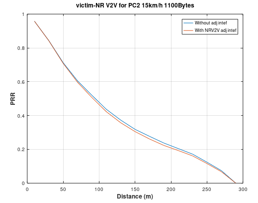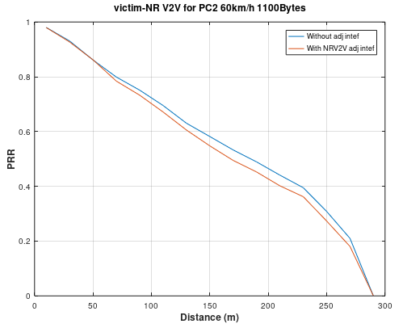
Figure 5.1.1.3.1-1 simulation results for scenario A case1
And the PRR loss can be found in the below table.
Table 5.1.1.3.1-1 PRR loss for scenario A case1
| PRR loss | PC2 NR V2X to NR V2X At 150m range for 60km/h |
PC2 NR V2X to NR V2X At 50m range for 15km/h |
|---|---|---|
| 1100Byte | 3.9% | 0.3% |
Based on NR V2X co-existence simulation results for case1, the following observations are made:
For both PRR loss at 50m range for 15km/h and at 150m range for 60km/h, NR V2X UE makes acceptable interference to NR V2X UE victim.
All the PRR loss is less than 5%.
In this clause, the simulation results in scenario B are provided. The simulation results for case3 and case4 are listed below based on 31dB ACLR and 27dB ACS for V2X UE.
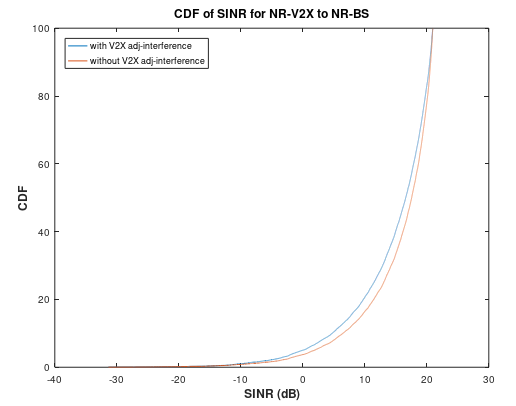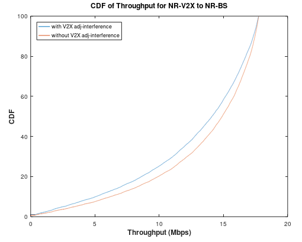
Figure 5.1.1.3.2-1 SINR and Throughput without power control for case3
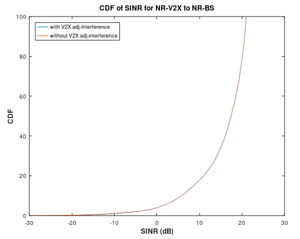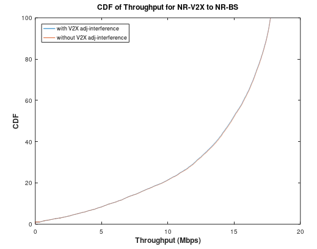
Figure 5.1.1.3.2-2 SINR and Throughput with power control for case3
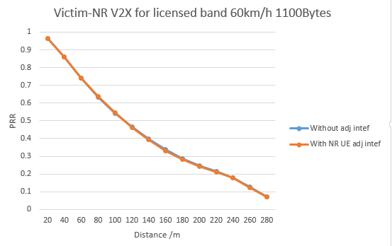
Figure 5.1.1.3.2-3 Coexistence results for case4 without power control
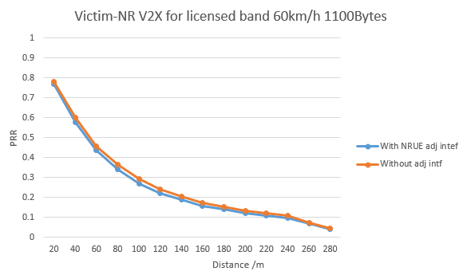
Figure 5.1.1.3.2-4 Coexistence results for case4 with power control
And the throughput loss and PRR loss can be found in the below table.
Table 5.1.1.3.2-1 Throughput loss for PC2 case3
| Throughput loss | 5% tile | |
|---|---|---|
| without power control | with power control | |
| 26% | little performance loss | |
Table 5.1.1.3.2-2 PRR loss for PC2 case4
| PRR loss (1100Byte) | At 150m range for 60km/h | |
|---|---|---|
| without power control | with power control | |
| 1.4% | 8.6% | |
Based on PC2 NR V2X co-existence simulation results for case3 and case4, the following observations are made:
With power control PRR loss at 150m range for 60km/h exceeds 5%, so the performance loss can be observed for NR V2X UE. But it is observed that there is very little performance loss for NR BS in this scenario.
Without power control the throughput loss at 5%-tile for 60km/h exceeds 5%, so the performance loss can’t be accepted for NR BS. But it is observed that there is only 1.4% PRR loss for NR V2X UE in this scenario.
The following V2X UE Power Classes define the maximum output power for any transmission bandwidth within the channel bandwidth. The period of measurement shall be at least one sub frame (1ms).
Table 8.1-1: V2X UE Power Class
| NR band | Class 1 (dBm) | Tolerance (dB) | Class 2 (dBm) | Tolerance (dB) | Class 3 (dBm) | Tolerance (dB) | Class 4 (dBm) | Tolerance (dB) |
|---|---|---|---|---|---|---|---|---|
| … | ||||||||
| n47 | 26 | ±2 | 23 | ±2 | ||||
NOTE 1: NR Band n47 is used for NR V2X Service. NOTE 2: PPowerClass is the maximum UE power specified without taking into account the tolerance |
||||||||
The following assumption can serve as a starting point for MPR simulation assumptions as shown in Table 5.1.2.2-1 and Table 5.1.2.2-2.
Table 5.1.2.2-1: MPR simulation assumption for PC2 NR V2X
| Parameter | Assumption |
|---|---|
| Center frequency | 5.9GHz |
| Bandwidth | 10/20/30/40MHz |
| Maximum output power | 26 dBm |
| Numerology | 15 kHz/30kHz/60kHz |
| Modulation | QPSK/16QAM/64QAM/256QAM |
| Waveform | CP-OFDM |
| Carrier leakage | 25dBc |
| IQ image | 25dBc |
| CIM3 | 45dBc or 60dBc |
| PA calibration | PA calibrated to deliver [31dBc] ACLR for a fully allocated RBs in 20MHz QPSK DFT- S-OFDM waveform at 1 dB MPR. This is based to share PA between LTE V2X and NR V2X at 5.9GHz as worst case. |
For PC2 NR V2X, simultaneous transmission of PSCCH and PSSCH in the same sub-frame is supported. The following constraints in Table 5.1.2.2-2 can be assumed based on current RAN1’s agreement.
Table 5.1.2.2-2: PC2 V2X UE’s MPR simulation assumptions
| Items | Assumption |
|---|---|
| Allowed sub-channel sizes | Support {10, 12, 15, 20, 25, 50, 75, 100} PRBs for possible sub-channel size. |
| Allowed LCRB allocation | 10,12,15,20,24,25,30,36,40,45,48,50,60,70,72,75,80,84,90,96,100,105,108,110,120,130,132,135,140,144,150,156,160,165,168,170,175,180,190,192,195,200,204,210,216 |
| Regarding PSCCH / PSSCH multiplexing | 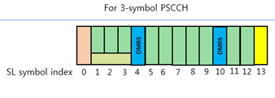 |
| PSCCH size | 10RB*3 Symbols |
| PSD offset of X dB between PSCCH and PSSCH | 0dB |
For simultaneous transmission of PSFCH transmission for PC2 V2X UE, RAN4 assumed as follow
Table 5.1.2.2-3: PC2 V2X UE’s MPR simulation assumptions for PSFCH transmission
| Items | Assumption |
|---|---|
| Modulation for PSSCH | QPSK |
| PSFCH | ZC sequence |
| Structure of Slot | Baseline is follow RAN1 agreements |
| RB allocation | - 1 RB per user - All users have the same power per RB - Total power of all users equals 26dBm for PC2 - Both Non-contiguous PSFCH RB allocation and contiguous PSFCH allocation are allowed MPR will be derived by non-contiguous PSFCH RB allocation (N>1) - At least, the worst cases with possible RBstart and Ngap need to be checked. ( Ngap = RBend – RBstart ) For example: The worst case N gap is (106-1 =105*15kHz*12=) 18.9MHz for 20MHz, 15kHz SCS - IMD problem by dual PSFCH in SEM/SE region shall be considered to derive MPR level according to all supporting CBW and SCS. - N (Number of users) is up to 5 and RBs except for RBstart and RBend can be inserted between RBstart and RBend randomly. - Assumption of N in RAN4 is only for MPR simulation purpose, the final number is up to RAN1 decision. |
For S-SSB transmission for PC2 V2X UE, RAN4 assumed as follow
Table 5.1.2.2-4: PC2 V2X UE’s MPR simulation assumptions for S-SSB transmission
| Items | Assumption |
|---|---|
| Modulation for PSBCH | QPSK |
| S-PSS | M-sequence |
| S-SSS | Golden-sequence |
| S-SSB structure | 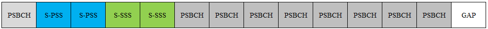 |
| RB allocation | RBstart: All the possible cases LCRB: 11 RB |
For contiguous allocation of PSCCH and PSSCH simultaneous transmission, the allowed MPR for the maximum output power for NR V2X physical channels PSCCH and PSSCH shall be specified as inner/outer RB allocations in Table 5.1.2.2.1-1 for power class 2.
Table 5.1.2.2.1-1: Maximum Power Reduction (MPR) for power class 2 V2X (Contiguous PSCCH and PSSCH transmission)
| Modulation | Channel bandwidth/MPR (dB) | ||
|---|---|---|---|
| Outer RB allocations | Inner RB allocations | ||
| CP-OFDM | QPSK | ≤ 5.5 | ≤ 2.5 |
| 16QAM | |||
| 64 QAM | ≤ 6.0 | ≤ 4.5 | |
| 256 QAM | ≤ 7.0 | ||
Where the following parameters are defined to specify valid RB allocation ranges for Outer and Inner RB allocations:
NRB is the maximum number of RBs for a given Channel bandwidth and sub-carrier spacing defined in Table 5.3.2-1 in TS38.101-1.
RBStart,Low = max(1, floor(LCRB/2))
where max() indicates the largest value of all arguments and floor(x) is the greatest integer less than or equal to x.
RBStart,High = NRB – RBStart,Low – LCRB
The RB allocation is an Inner RB allocation if the following conditions are met
RBStart,Low ≤ RBStart ≤ RBStart,High, and
LCRB ≤ ceil(NRB/2)
where ceil(x) is the smallest integer greater than or equal to x.
The RB allocation is an Outer RB allocation for all other allocations which are not an Inner RB allocation.
To comply the EN 302 571 standard emission mask, RAN4 need to derive A-MPR requirements considering with the additional A-SEM and A-SE requirements in EN 302 571 standard as shown in Table 5.1.2.3-1 and Table 5.1.2.3-2.
NR V2X UE shall satisfy the additional SEM and additional SE requirements when NS_33 is configured from pre-configured radio parameters or the cell and the indication from upper layers has indicated was informed.
Table 5.1.2.3-1: Additional SEM requirements for 10MHz channel bandwidth
| Spectrum emission limit (dBm EIRP)/ Channel bandwidth | ||
ΔfOOB (MHz) |
10 MHz | Measurement bandwidth |
| ± 0-0.5 | [\(- 13 - 12\left( \frac{\left| \mathrm{\Delta}\text{fOOB} \right|}{MHz} \right)\)] | 100 kHz |
| ± 0.5-5 | [\(- 19 - \frac{16}{9}\left( \frac{\left| \mathrm{\Delta}\text{fOOB} \right|}{MHz} - 0.5 \right)\)] | 100 kHz |
| ± 5-10 | [\(- 27 - 2\left( \frac{\left| \mathrm{\Delta}\text{fOOB} \right|}{MHz} - 5.0 \right)\)] | 100 kHz |
NOTE 1: As a general rule, the resolution bandwidth of the measuring equipment should be equal to the measurement bandwidth. However, to improve measurement accuracy, sensitivity and efficiency, the resolution bandwidth may be smaller than the measurement bandwidth. When the resolution bandwidth is smaller than the measurement bandwidth, the result should be integrated over the measurement bandwidth in order to obtain the equivalent noise bandwidth of the measurement bandwidth.
NOTE 2: Additional SEM for V2X overrides any other requirements in frequency range 5855-5950MHz.
NOTE 3: The EIRP requirement is converted to conducted requirement depend on the supported post antenna connector gain Gpost connector declared by the UE following the principle described in annex G in TS38.101-1.
Table 5.1.2.3-2: Additional SE requirements
| NR Band | Spurious emission for UE coexistence | ||||||
| Protected Band | Frequency ranges (MHz) | Maximum Level (dBm) | MBW (MHz) | NOTE | |||
| n47 | E-UTRA Band 1, 3, 5, 7, 8, 22, 26, 28, 34, 39, 40, 41, 42, 44, 45, 65, 68, 72, 73 NR band n77, n78 , n79 |
FDL_low | - | FDL_high | -50 | 1 | |
| Frequency range | 5925 | - | 5950 | -30 EIRP | 1 | 38, 40, 43 | |
| Frequency range | 5815 | - | 5855 | -30 EIRP | 1 | 38, 43 | |
NOTE 1: Applicable when NS_33 or NS_34 is configured by the pre-configured radio parameters. NOTE 2: In the frequency range x-5950MHz, SE requirement of -30dBm/MHz should be applied; where x = max (5925, fc + 15), where fc is the channel centre frequency. NOTE 3: The EIRP requirement is converted to conducted requirement depend on the supported post antenna connector gain Gpost connector declared by the UE following the principle described in annex I. |
|||||||
When NS_33 is indicated by the network or pre-configured radio parameters for NR V2X UE, the additional maximum output power reduction specified as
A-MPR = CEIL {MA, 0.5}
Where MA is defined as follows
MA = A-MPRBase + Gpost connector* A-MPRStep
CEIL{MA, 0.5} means rounding upwards to closest 0.5dB.
A-MPRBase which is specified for PSCCH and PSSCH transmission\S-SSB\PSFCH below is allowed when network signalling value is provided. A-MPRBase is the default A-MPR value when no Gpost connector is declared. The supported post antenna connector gain Gpost connector is declared by the UE following the principle described in 38.101-1.
For the contiguous PSSCH and PSCCH transmission when NS_33 is indicated by the network or pre-configured radio parameters for NR V2X UE, the NR UE allow the follow A-MPR requirements.
Table 5.1.2.3.1-1: A-MPR for PSCCH/PSSCH by NS_33 (at Fc=5860MHz)
| Carrier frequency [MHz] | Resource Block (LCRB) | Start Resource Block | A-MPR(dB) | ||
|---|---|---|---|---|---|
| QPSK/16QAM | 64QAM | 256QAM | |||
| 5860 | ≥ 10 and ≤ 15 | 0 and 1 | ≤ 24 | ||
| 2 and 3 | ≤ 22 | ||||
| 4 | ≤ 20 | ||||
| ≥ 10 and ≤ 25 | ≥ 5 and ≤ 7 | ≤ 17.5 | |||
| ≥ 10 and ≤ 30 | 10 | ≤ 16 | |||
| ≥ 10 | 8 and 9 | ≤ 16 | |||
| ≥ 11 and ≤ 14 | ≤ 14.5 | ||||
| ≥ 15 and ≤ 19 | ≤ 13 | ||||
| ≥ 20 and ≤ 24 | ≤ 11.5 | ||||
| ≥ 25 and ≤ 29 | ≤ 10 | ||||
| ≥ 30 | ≤ 8.5 | ||||
| ≥ 20 and ≤ 24 | 1 | ≤ 22 | |||
| ≥ 20 and ≤ 30 | 0 | ≤ 22 | |||
| 2 and 3 | ≤ 20 | ||||
| 4 | ≤ 17.5 | ||||
| ≥ 25 and ≤ 40 | 1 | ≤ 20 | |||
| ≥ 30 | ≥ 5 and ≤ 7 | ≤ 16 | |||
| ≥ 36 | 0 | ≤ 20 | |||
| ≥ 2 and ≤ 4 | ≤ 17.5 | ||||
| 10 | ≤ 14.5 | ||||
| ≥ 45 | 1 | ≤ 17.5 | |||
Table 5.1.2.3.1-2: A-MPR for PSSCH/PSCCH by NS_33 at other carrier frequency
| Carrier frequency [MHz] | RB allocations | A-MPR (dB) | |||
|---|---|---|---|---|---|
| QPSK | 16QAM | 64QAM | 256QAM | ||
| 5870,5910,5920 | Outer | ≤ 8.5 | ≤ 8.5 | ||
| Inner | ≤ 6.0 | ||||
| 5880,5890,5900 | Outer | ≤ 6.0 | ≤ 6.5 | ||
| Inner | ≤ 3.5 | ≤ 4.5 | |||
Inner and outer RB allocations are defined in section 5.1.2.2.1.
For intra-band V2X operation, both TDM and FDM between Uu and SL are considered. The prioritization of operating scenarios including TDM and FDM and respective basic RF architecture for operating scenarios are defined as follows:
1st priority: TDM with same carrier or different carrier (Single RF chain for Tx as baseline)
- RAN4 allow TDM operation between spectrally partially used PC5 SL and Uu UL/DL operation in a licensed TDD band regardless of adjacent/ non-adjacent carrier
- 2nd priority: FDM with adjacent carrier (Separate RF chain for Tx as baseline)
- 3rd priority: FDM with non-adjacent carrier (Separate RF chain for Tx as baseline)
Other UE RF architecture is not precluded from implementation perspective.
In Rel-17, RAN4 focus on TDD band for intra-band V2X operation and deprioritize FDD band. FDD band can be studied once operators have a request.
For intra-band contiguous and non-contiguous V2X con-current operation with FDM operation, simultaneous UL transmission and SL reception in TDD band are not allowed.
Release independence to earlier releases is optional for both inter-band and intra-band con-current V2X operation.
In Rel-17, SL transmission timing remains aligned with DL timing as defined in Rel-16. When it comes to intra-band Uu and V2X operation in a licensed band, it is more likely to have self-interference between Uu and SL, especially for the same carrier. Uu timing and SL timing are illustrated in figure 5.2.1-1.
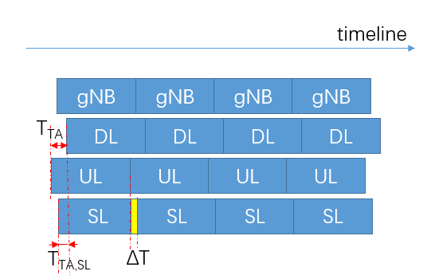
Figure 5.2.1-1: Uu timing and SL timing
The timing for sidelink radio frame shall start \((N_{TA,SL} + N_{TA,offset}) \bullet T_{c}\) seconds before the start of DL as timing reference radio frame. Refer to TS 38.211 sub-clause 8.5, for intra-band concurrent operation, the \(N_{TA,offset}\) is given by clause 4.3.1 of [TS 38.211] while The quantity \(N_{TA,SL}\) equals to 0. Hence the following timing advance for sidelink and uplink can be found as:
-The denoted sidelink timing advance TTA,SL = \(N_{TA,offset} \bullet T_{c}\)
-The denoted uplink timing advance TTA= \((N_{TA,SL} + N_{TA,offset}) \bullet T_{c}\)
The overlapping of SL and UL is the timing difference as ΔT = TTA,SL - TTA= \(N_{TA,SL} \bullet T_{c}\)
The detailed self-interference problem is illustrated in figure 5.2.1-2. The overlapping part of UL slot and SL Rx slot (blue shadow part) implies UL transmission has interference to SL reception due to timing misalignment between SL and UL. On the other hand, SL transmission has no interference to DL reception since SL timing is currently aligned with DL timing.
Figure 5.2.1-2: UL Tx interfering to SL Rx
The last symbol of each SL slot is punctured as guard period. However, UL transmission still has interference to SL reception when the timing advance is larger than the length of one symbol, particularly for the UE with a large cell size.
In the coexistence evalutions for intra-band con-current V2X operation, RAN4 allowed the TDM operation between NR Uu and NR SL and also allowed the FDM operation with synchronous operation between NR Uu and NR SL in a licensed band. Therefore, the adjacent coexistence evaluation is not necessary to allow the intra-band con-current V2X operation in a licensed band since the intra-band con-current operations are quite similar to the intra-band NR CA operation in a licensed band.
Based on the intra-band V2X operation scenarios and basic assumptions in section 5.2.1, RAN4 do not need to study the adjacent coexistence evaluation analysis in a licensed band. Because RAN4 agreed the operation scenarios priority in section 5.2.1. And also, the simultaneous UL transmission and SL reception in TDD band are not allowed in 2nd priority and 3rd priority.
Hence, the coexistence evaluation is not necessary to allow the intra-band con-current V2X operation in a licensed band since the intra-band con-current operations are quite similar to the intra-band NR CA operation in a licensed band. Therefore, the intra-band con-current V2X UE can be coexisted with legacy NR system.
NR Uu operation is designed to operate with NR sidelink in TDM mode on the operating band combinations listed in Table 5.2.3.1-1.
Table 5.2.3.1-1: Intra-band V2X operating bands with TDM operation
| NR Uu-NR V2X Band Combination | NR Uu or NR V2X Band | Interface |
|---|---|---|
| V2X_n79_n791 | n79 | Uu |
| n79 | PC5 | |
| NOTE 1: Only single switched sidelink or NR uplink/downlink is supported. | ||
For the intra-band V2X service for TDM operation in same carrier or different carriers, the NR Uu operation meet the NR UE RF requirements and NR V2X UE meet the existing TS38.101-1 RF requirements in suffix E, respectively.
To decide the switching position for TDM operation in same/different carrier, RAN4 will follow the priority rules outlined in TS38.321 and TS38.213.
In RAN4 #101 meeting, RAN4 decided to apply the different TA between NR Uu and NR SL. The expected NR Uu’s TA is 6.6us + 13us =19.6us when RAN4 assumed cell range with 1km. But the TASL is only considered the NTA_offset with 13us as shown in Figure 5.2.3.2.1-1.
NOTE: The different TA between NR SL and NR Uu could be interfered each other carrier. Some cases, the interference problem are elimited by last symbol puncturing and other means. Specially, the interference problem will be raised for the larger cell range such as over 5km cell range.
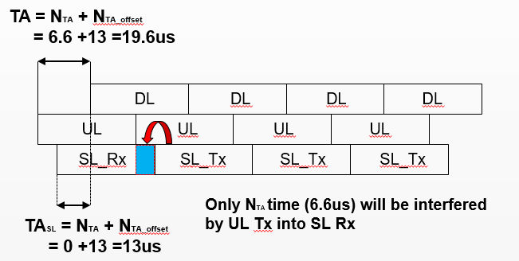
Figure 5.2.3.2.1-1 Analysis of the interference problems for the time alignment between NR Uu and NR SL for intra-band con-current operation
The detail UL slot and SL slot are described as follow in Figure 5.2.3.2.1-2.
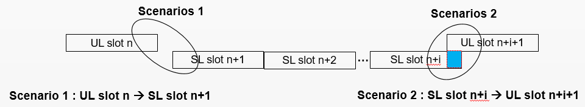
Figure 5.2.3.2.1-2. NR SL and NR UL allocated slots with different TA in same/differnt carrier
In scenario 1, RAN4 can consider two cases (case 1 and Case 2) according to the priority rules between NR Uu and NR SL as shown in Figure 5.2.3.2.1-3 in same carrier.
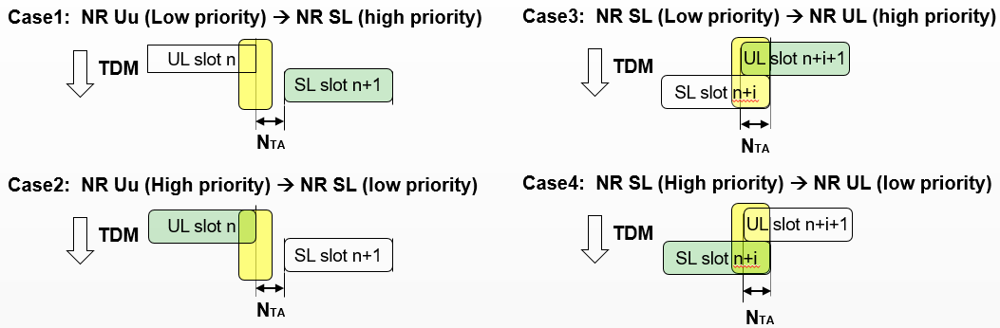
Figure 5.2.3.2.1-3. 4 operating cases based on priority between NR SL and NR UL with different TA in same carrier
In Figure 5.2.3.2.1-3, the yellow colour region is the agreed switching time position for TDM operation between NR UL slot n and NR SL slot n+1. In here, there are NTA time (6.6us) between UL slot and NR next slot as shown in Case 1 and Case 2. There was no TA problem for TDM operation in same carrier and the high priority carrier (green colour) shall be protected without any TA interference problem as shown in Case 1 and Case 2.
In scenario 2, RAN4 also consider two cases (Case 3 and Case 4) according to the priority rules between NR Uu and NR SL as shown in Figure 5.2.3.2.1-3 in same carrier.
In case 3, the high priority is in NR Uu for switching time from SL slot n+i to UL slot n+i+1, then the UL slot shall be protected from the SL transmission. But NTA time (6.6us) of NR UL slot was overlapped with previous SL slot n+i and the UL signal will be lost since the overlapped region was considered as switching time for TDM operation.
In case 4, the high priority is in NR SL for switching time from SL slot n+i to UL slot n+i+1 as shown in Figure 5.2.3.2.1-3, then the SL slot shall be protected from the UL transmission. But, there was not exist the SL signal in the overlapped NTA time (6.6us) which was belong to the punctured last symbol of NR SL. Therefore, the high priority NR SL shall be protected by TA interference problem and keep the agreed ON/OFF time mask in Figure 5.2.3.2.1-4.
For the TDM operation in same carrier, the following transmit ON/OFF time mask are applied.
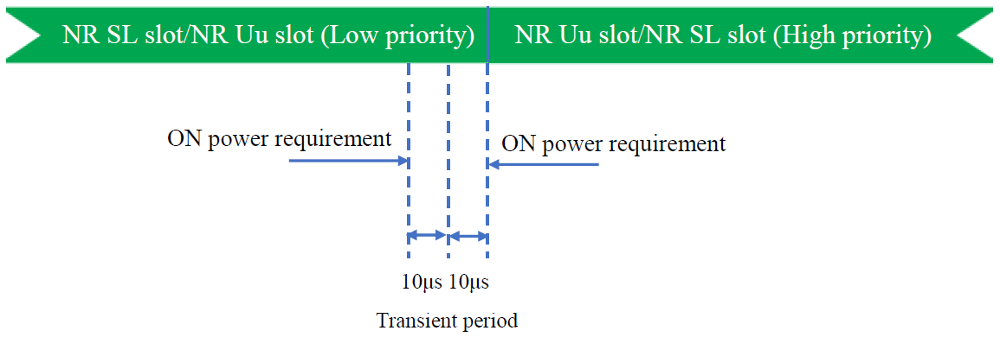
Figure 5.2.3.2.1-4: ON/OFF Time mask for TDM operation in same carrier and same bandwidth from NR SL to NR Uu in licensed band
For the TDM operation in different carrier, the following transmit ON/OFF time mask is applied.
The switching time shall be located on the RAT of low priority when NR Uu and NR SL have different priorities based on priority information specified in TS 38.321 and TS38.213. It is up to UE implementation when NR Uu and NR SL have the same priority based on priority information specified in TS 38.213.

Figure 5.2.3.2.1-5: Time mask for switching between SL and Uu for different carrier case
In the real field, there is a timing advance difference, i.e. \(N_{TA} \bullet T_{c}\) between NR Uu slot and NR SL slot due to different timing advance of NR Uu and NR SL which has been specified in sub-clause 5.2.1. The On/Off time mask can be shifted due to the time advance difference in the same carrier and different carrier and it is shown in following figure 5.2.3.2.1-6 and figure 5.2.3.2.1-7.
Figure 5.2.3.2.1-6: Time mask shift due to time difference for NR SL switching to NR Uu
Figure 5.2.3.2.1-7: Time mask shift due to time difference for NR Uu switching to NR SL
For intra-band V2X operating UE in Band n79 with TDM mode, the configured transmitted power each RAT specified in clause 6.2.4 in TS38.101-1 and in clause 6.2E.4 in TS38.101-1 which will apply for NR uplink carrier and NR V2X carrier, respectively.
For intra-band V2X operating UE in Band n79 with TDM mode, the each Tx/Rx requirements specified in TS38.101-1 which will be applied for NR uplink carrier and NR SL carrier respectively.
Bandwidth combination sets and V2X transmission/reception configurations for intra-band contiguous V2X UE are specified in Table 5.2.4.1-1.
Table 5.2.4.1-1: NR Uu-NR V2X configurations and bandwidth combination sets for intra-band contiguous V2X UE
| V2X configuration | V2X transmisison band | Channel bandwidths for Uu carrier (MHz) | Channel bandwidths for SL carrier (MHz) | Maximum aggregated bandwidth (MHz) |
Bandwidth combination set |
|---|---|---|---|---|---|
| V2X_n79B | NR band n79 | 40, 50, 60, 80 | 10,20,30,40 | 100 | 0 |
The following NR intra-band V2X con-current operating UE’s Power Classes define the maximum output power for any transmission bandwidth within the channel bandwidth. The period of measurement shall be at least one sub frame (1ms).
Table 5.2.4.2.1-1: intra-band V2X contiguous con-current V2X UE Power Class
| NR band | Class 1 (dBm) | Tolerance (dB) | Class 2 (dBm) | Tolerance (dB) | Class 3 (dBm) | Tolerance (dB) | Class 4 (dBm) | Tolerance (dB) |
|---|---|---|---|---|---|---|---|---|
| … | ||||||||
| V2X_n79B | 26 | +2/-3 | 23 | +2/-3 | ||||
NOTE 1: The intra-band contiguous con-current NR V2X operating band is used for NR V2X and NR Uu Service. Bandwidth class B is that the aggregated channel bandwidth 20 MHz ≤ BWChannel_SL&UL ≤ 100 MHz. NOTE 2: PPowerClass is the maximum UE power specified without taking into account the tolerance |
||||||||
The following assumption can serve as a starting point for MPR simulation assumptions as shown in Table 5.2.4.2.2-1 and Table 5.2.4.2.2-2.
Table 5.2.4.2.2-1: MPR simulation assumption for NR V2X intra-band contiguous con-current operation
| Parameter | Assumption |
|---|---|
| Center frequency | 4.5GHz (n79) |
| Bandwidth | 10/20/30/40MHz for NR SL 10/20/40/60/80MHz for NR Uu |
| Maximum output power | 23dBm: Back off 3dB with 23dBm 2 PAs or 26 dBm: 23dBm 2 PAs |
| Numerology | 15 kHz/30kHz/60kHz |
| Modulation | QPSK/16QAM/64QAM/256QAM Individual modulation order will be considered between NR SL and NR Uu |
| Waveform | CP-OFDM for NR SL CP-OFDM or DFT-S-OFDM for NR Uu |
| Carrier leakage | 25dBc |
| IQ image | 25dBc |
| CIM3 | 45dBc or 60dBc |
| PA calibration | PA calibrated to deliver 30dBc ACLR for a fully allocated RBs in 20MHz QPSK DFT- S-OFDM waveform at 1 dB MPR. |
For NR V2X intra-band contiguous con-current operation, simultaneous transmission of PUSCH/PUCCH and NR V2X’s PSCCH and PSSCH in the same sub-frame is supported. The following constraints in Table 5.2.4.2.2-2 can be assumed based on current RAN1’s agreement.
Table 5.2.4.2.2-2: NR V2X intra-band contiguous con-current operation UE’ MPR simulation assumptions
| Items | Assumption |
|---|---|
| Allowed sub-channel sizes for NR SL | Support {10, 12, 15, 20, 25, 50, 75, 100} PRBs for possible sub-channel size. |
| Allowed LCRB allocation for NR SL | 10,12,15,20,24,25,30,36,40,45,48,50,60,70,72,75,80,84,90,96,100,105,108,110,120,130,132,135,140,144,150,156,160,165,168,170,175,180,190,192,195,200,204,210,216. No restriction of LCRB for NR Uu 10 for NR SL(minimum value) 1 for NR Uu (minimum value), The values are selected for worst case in aspect of MPR. |
| Regarding PSCCH / PSSCH multiplexing for NR SL | |
| PSCCH size for NR SL | 10RB*3 Symbols |
| PSD offset of X dB between PSCCH and PSSCH for NR SL | 0dB |
| NOTE 1: If there is not indicate the detail parameters, then follow TR38.886 for NR SL operation. Also follow TS38.211/TS38.212/TS38.101-1 for NR Uu operation. | |
For simultaneous transmission of PSFCH transmission for V2X UE and PUSCH/PUCCH for NR Uu, RAN4 need further discussion how to apply the MPR requirements.
For simultaneous transmission of S-SSB transmission for V2X UE and PUSCH/PUCCH for NR Uu, RAN4 need further discussion how to apply the MPR requirements.
For NR intra-band V2X con-current operation with adjacent channel, the allowed Maximum Power Reduction (MPR) for the maximum output power in Table 5.2.4.2.1-1 with contiguous RB allocation is specified in Table 5.2.4.2.2-3 for UE power class 3 with bandwidth class B.
Table 5.2.4.2.2-3: Contiguous RB allocation for Power Class 3
| Higher Modulation order between sidelink and uplink | MPR for bandwidth class B(dB) | ||
|---|---|---|---|
| Inner | Outer | ||
| CP-OFDM | QPSK | ≤ [2.5] | ≤ [4.5] |
| 16QAM | ≤ [2.5] | ≤ [4.5] | |
| 64QAM | ≤ [4.5] | ≤ [5.0] | |
| 256QAM | ≤ [6.0] | ≤ [6.0] | |
For bandwidth class B with contiguous RB allocation, the following parameters are defined to specify valid RB allocation ranges for Inner and Outer RB allocations:
An RB allocation is contiguous if LCRB1 = 0 or LCRB2 = 0 or (LCRB1 ≠ 0 and LCRB2 ≠ 0 and RBStart1 + LCRB1 = NRB1 and RBStart2 = 0), where RBStart1, LCRB1, and NRB1 are for SL CC1, RBStart2, LCRB2, and NRB2 are for UL CC2. SL CC1 is the component carrier with lower frequency.
In contiguous NR V2X intra-band con-current operation, a contiguous allocation is an inner allocation if
RBStart,Low ≤ RBStart_SL&UL ≤ RBStart,High, and NRB_alloc ≤ ceil(NRB,agg /2),
where
RBStart,Low = max(1, floor(NRB_alloc /2))
RBStart,High = NRB,agg – RBStart,Low – NRB,alloc,
with
NRB_alloc= LCRB1 ∙ 2µ1 + LCRB2 ∙ 2µ2
NRB_alloc= (NRB1 - RBStart1)∙ 2µ1 + (RBStart2 + LCRB2 ) ∙ 2µ2,
NRB,agg=NRB1∙2µ1+ NRB2∙2µ2.
If LCRB1 =0, RBStart_SL&UL = NRB1∙2µ1+ RBStart2∙2µ2,
if LCRB1 > 0, RBStart_SL&UL = RBStart1∙2µ1,
where µ1 and µ2 is 0, 1 and 2 for SCS of 15kHz, 30kHz and 60kHz respectively.
A contiguous allocation that is not an Inner contiguous allocation is an Outer contiguous allocation.
For NR intra-band V2X con-current operation with adjacent channel, the allowed Maximum Power Reduction (MPR) for the maximum output power in Table 5.2.4.2.1-1 with non-contiguous RB allocation is specified in Table 5.2.4.2.2-4 for UE power class 3 with bandwidth class B.
Table 5.2.4.2.2-4: Non-contiguous RB allocation for Power Class 3
| Higher Modulation order between sidelink and uplink | MPR for bandwidth class B(dB) | |||
|---|---|---|---|---|
| Inner | Outer1 | Outer2 | ||
| CP-OFDM | QPSK | ≤ [2.5] | ≤ [4.0] | ≤ [4.5] |
| 16QAM | ≤ [2.5] | ≤ [4.0] | ≤ [4.5] | |
| 64QAM | ≤ [4.5] | ≤ [4.5] | ≤ [5.0] | |
| 256QAM | ≤ [6.0] | ≤ [6.0] | ≤ [6.0] | |
For bandwidth classes B with non-contiguous RB allocation, the following parameters are defined to specify valid RB allocation ranges for Inner, Outer1 and Outer2 RB allocations:
Non-Contiguous RB allocation is defined as RBStart1 + LCRB1 < NRB1, or RBStart2 > 0, when both SL CC and UL CC are activated and allocated with RB(s), where RBStart1, LCRB1, and NRB1 are for SL CC1, RBStart2, LCRB2, and NRB2 are for UL CC2. SL CC1 is the component carrier with lower frequency.
In contiguous NR V2X intra-band con-current operation, a non-contiguous RB allocation is a non-contiguous Inner RB allocation if the following conditions are met:
RBStart,Low ≤ RBStart_CA ≤ RBStart,High and NRB_alloc ≤ ceil((BWChannel_SL&UL / 3 – BWgap ) / 0.18MHz),
where
NRB_alloc = (NRB1 - RBStart1)∙ 2µ1 + (RBStart2 + LCRB2 ) ∙ 2µ2, RBStart_SL&UL = RBStart1∙2μ1
RBStart,Low = max(1, floor(NRB_alloc + (BWgap – BWGB,low)/0.18MHz))
RBStart,High = floor((BWChannel_SL&UL – 2 ∙ BWgap – BWGB,low)/0.18MHz – 2 ∙ NRB_alloc)
BWGB,low =Foffset,low – (NRB1∙12+1)∙SCS1/2
BWgap is the bandwidth of the gap between NRB1 and NRB2 possible allocations of SL CC1 and UL CC2 respectively.
In contiguous NR V2X intra-band con-current operation, a non-contiguous RB allocation is a non-contiguous outer 1 RB allocation if the following conditions are met:
RBStart,Low ≤ RBStart_SL&UL ≤ RBStart,High and NRB_alloc ≤ ceil((3 BWChannel_SL&UL / 5 – BWgap) / 0.18MHz)
where
RBStart,Low = max(1, 2 ∙ NRB_alloc – floor( (BWChannel_SL&UL – 2 ∙ BWgap + BWGB,low)/0.18MHz)),
RBStart,High = floor((2 ∙ BWChannel_SL&UL – 3 ∙ BWgap – BWGB,low) / 0.18MHz – 3 ∙ NRB_alloc)
NRB_alloc , RBStart_SL&UL , BWgap and BWGB,low are as defined for the Inner region.
In contiguous NR V2X intra-band con-current operation, a non-contiguous allocation is an Outer 2 allocation if it is neither a non-contiguous Inner allocation nor an Outer 1 allocation.
For NR intra-band V2X con-current operation with adjacent channel, the allowed Maximum Power Reduction (MPR) for the maximum output power in Table 5.2.4.2.1-1 with contiguous RB allocation is specified in Table 5.2.4.2.2-5 for UE power class 2 with bandwidth class B.
Table 5.2.4.2.2-5: Contiguous RB allocation for Power Class 2
| Higher Modulation order between sidelink and uplink | MPR for bandwidth class B(dB) | ||
|---|---|---|---|
| Inner | Outer | ||
| CP-OFDM | QPSK | ≤ [3.0] | ≤ [5.5] |
| 16QAM | ≤ [4.0] | ≤ [5.5] | |
| 64QAM | ≤ [5.5] | ≤ [6.0] | |
| 256QAM | ≤ [7.5] | ≤ [7.5] | |
For NR intra-band V2X con-current operation with adjacent channel, the allowed Maximum Power Reduction (MPR) for the maximum output power in Table 5.2.4.2.1-1 with non-contiguous RB allocation is specified in Table 5.2.4.2.2-6 for UE power class 2 with bandwidth class B.
Table 5.2.4.2.2-6: Non-contiguous RB allocation for Power Class 2
| Higher Modulation order between sidelink and uplink | MPR for bandwidth class B(dB) | |||
|---|---|---|---|---|
| inner | Outer1 | Outer2 | ||
| CP-OFDM | QPSK | ≤ [3.0] | ≤ [5.5] | ≤ [6.0] |
| 16QAM | ≤ [4.5] | ≤ [5.5] | ≤ [6.5] | |
| 64QAM | ≤ [5.5] | ≤ [6.5] | ≤ [7.0] | |
| 256QAM | ≤ [8.0] | ≤ [8.0] | ≤ [8.0] | |
For intra-band con-current operation, the configured maximum output power PCMAX,c on serving cell c for SL and Uu shall be set as specified in clause 6.2E.4.1 and in clause 6.2.4, but with MPRc = MPR and A-MPRc = A-MPR with MPR and A-MPR as determined by subclause 6.2E.2 and 6.2E.3, respectively. There is one power management term for the UE, denoted P-MPR, and P-MPR c = P-MPR.
The total configured maximum output power PCMAX shall be set within the following bounds:
PCMAX_L ≤ PCMAX ≤ PCMAX_H
For intra-band con-current operation when same slot pattern is used in all aggregated serving cells,
PCMAX_L = MIN{10 log10 ∑ pEMAX,c - ∆TC ,PPowerClass,con-current – MAX(MAX(MPR, A-MPR) + ΔTIB,c + ∆TC, P-MPR) }
PCMAX_H = MIN{10 log10 ∑ pEMAX,c, PPowerClass,con-current}
where
- pEMAX,c is the linear value of PEMAX,c which is given by IE P-Max for Uu serving cell c in [7] or by IE sl-maxTxPower for SL defined in [7] ;
- PPowerClass, con-current is the maximum UE power specified in Table [6.2E.1.2-2] without taking into account the tolerance;
- MPR and A-MPR are specified in clause 6.2E.2 and 6.2E.3, respectively;
- ∆TIB,c is specified in clause [6.2E.4.3];
- P-MPR is the power management term for the UE;
- ∆TC is the highest value ∆TC,c among all serving cells c;
For intra-band con-current operation, when at least one different numerology/slot pattern is used in aggregated cells, the UE is allowed to set its configured maximum output power PCMAX,c(i),i for serving cell c(i) of slot numerology type i, and its total configured maximum output power PCMAX.
The configured maximum output power PCMAX,c(i),i (p) in slot p of serving cell c(i) on slot numerology type i shall be set within the following bounds:
PCMAX_L,f,c(i),i (p) ≤ PCMAX,f,c(i), i (p) ≤ PCMAX_H,f,c(i),i (p)
where PCMAX_L,f,c (i),i (p) and PCMAX_H,f,c(i),i (p) are the limits for a serving cell c(i) of slot numerology type i as specified in clause 6.2E.4.1 or in clause 6.2.4.
The total UE configured maximum output power PCMAX (p,q) in a slot p of slot numerology or symbol pattern i, and a slot q of slot numerology or symbol pattern j that overlap in time shall be set within the following bounds unless stated otherwise:
PCMAX_L(p,q) ≤ PCMAX (p,q) ≤ PCMAX_H (p,q)
When slots p and q have different transmissions lengths and belong to different cells on same band:
PCMAX_L (p,q) = MIN {10 log10 [pCMAX_L,f,c(i),Uu,i (p) + pCMAX_L,f,c(i),V2X,j (q)], PPowerClass,con-current }
PCMAX_H (p,q) = MIN {10 log10 [pCMAX_ H,f,c(i),Uu,i (p) + pCMAX_ H,f,c(i),V2X,j (q)], PPowerClass,con-current }
where pCMAX_L,f,c (i),i and pCMAX_ H,f,c(i),i are the respective limits PCMAX_L,f,c (i),i and PCMAX_H,f,c(i),i expressed in linear scale.
TREF and Teval are specified in Table 6.2E.4.1-1 when same and different slot patterns are used in con-current operation carriers. For each TREF, the PCMAX_L is evaluated per Teval and given by the minimum value taken over the transmission(s) within the Teval; the minimum PCMAX_L over the one or more Teval is then applied for the entire TREF.
Table 6.2E.4.1-1: PCMAX evaluation window for different slot and channel durations
| TREF | Teval | Teval with frequency hopping |
| TREF of largest slot duration over both UL and SL CCs | Physical channel length | Min(Tno_hopping, Physical Channel Length) |
The measured maximum output power PUMAX over all serving cells with same slot pattern shall be within the following range:
PCMAX_L – MAX{TL, TLOW(PCMAX_L) } ≤ PUMAX ≤ PCMAX_H + THIGH(PCMAX_H)
PUMAX = 10 log10 ∑ pUMAX,c
where pUMAX,c denotes the measured maximum output power for serving cell c expressed in linear scale. The tolerances TLOW(PCMAX) and THIGH(PCMAX) for applicable values of PCMAX are specified in Table 6.2E.4.1-2. The tolerance TL is the absolute value of the lower tolerance for applicable NR V2X con-current operation configuration as specified in Table [6.2A.1.3-1-2 for con-current operation configuration].
The measured maximum output power PUMAX over all serving cells, when at least one slot has a different transmission numerology or slot pattern, shall be within the following range:
P'CMAX_L– MAX{TL, TLOW (P'CMAX_L)} ≤ P'UMAX ≤ P'CMAX_H + THIGH (P'CMAX_H)
P'UMAX = 10 log10 ∑ p'UMAX,c
where p'UMAX,c denotes the average measured maximum output power for serving cell c expressed in linear scale over TREF. The tolerances TLOW(P'CMAX) and THIGH(P'CMAX) for applicable values of P'CMAX are specified in Table 6.2E.4.1-2 for intra-band carrier aggregation. The tolerance TL is the absolute value of the lower tolerance for applicable NR V2X con-current operation configuration as specified in Table [6.2E.1.2-1 for con-current operation configuration].
where:
P'CMAX_L = MIN{ MIN {10log10∑( pCMAX_L,f,c(i),i), PPowerClass,con-current} over all overlapping slots in TREF}
P'CMAX_H = MAX{ MIN{10 log10 ∑ pEMAX,c , PPowerClass,con-current} over all overlapping slots in TREF}
Table 6.2E.4.1-2: PCMAX tolerance for SL intra-band con-current operation
| PCMAX (dBm) |
Tolerance TLOW(PCMAX) (dB) |
Tolerance THIGH(PCMAX) (dB) |
| 26 ≤ PCMAX < 23 | 3 | 2 |
| 21 ≤ PCMAX ≤ 23 | 2.0 | |
| 20 ≤ PCMAX < 21 | 2.5 | |
| 19 ≤ PCMAX < 20 | 3.5 | |
| 18 ≤ PCMAX < 19 | 4.0 | |
| 13 ≤ PCMAX < 18 | 5.0 | |
| 8 ≤ PCMAX < 13 | 6.0 | |
| -40 ≤ PCMAX < 8 | 7.0 | |
A UE supporting sildelink operation can be configured by higher layers with one or more sidelink resource pools. A sidelink resource pool can be associated with either sidelink resource allocation mode 1 or sidelink resource allocation mode 2.
For sidelink resource allocation in either mode 1 or mode 2, if UE is in RRC_CONNECTED state, and the preparation procedure time for transmission of sidelink physical channel is available before of PUSCH preparation procedure time, for transmission of Uu and SL not overlap in time, the configured output power PCMAX,c specified in clause 6.2E.4.1 and in clause 6.2.4 apply for Uu and SL transmission respectively, otherwise, the configured maximum output power PCMAX specified in this clause shall apply.
For sidelink resource allocation mode 2, if UE is in RRC_IDLE state, sidelink transmission is based on pre-configured sidelink resource pool, the UE configured output power is determined by sidelink only, where the configured output power specified in clause 6.2E.4.1 apply.
For sidelink resource allocation mode 2, if UE is in RRC_INACTIVE state, and Uu does not support SDT, the configured output power specified in clause 6.2E.4.1 apply, otherwise, the configured maximum output power PCMAX in this clause shall apply.
For intra-band con-current V2X operation UE, the minimum output power is defined per RAT and the requirement for NR uplink is specified in clause 6.3.1 in TS38.101-1 and the requirement for NR sidelink is specified in clause 6.3E.1 in TS38.101-1, respectively.
For intra-band con-current V2X operation UE, the transmit OFF power is defined per RAT when the transmitter is OFF on all component carriers. The requirement for NR uplink is specified in clause 6.3.2 in TS38.101-1 and the requirement for NR sidelink is specified in clause 6.3E.2 in TS38.101-1, respectively.
For intra-band con-current V2X operation UE, the general ON/OFF time mask is defined per RAT during the ON power period and the transient periods. The ON/OFF time mask specified in clause 6.3.3.1 in TS38.101-1 is applicable for NR uplink and the ON/OFF time mask in 6.3E.3.1 in TS38.101-1 is applicable for NR sidelink. The OFF period as specified in clause 6.3.3.1 in TS38.101-1 shall only be applicable for each component carrier when all the component carriers are OFF.
The absolute power tolerance is the ability of the UE transmitter to set its initial output power to a specific value for the first sub-frame at the start of a contiguous transmission or non-contiguous transmission with a transmission gap on each active component carriers larger than 20ms. The requirement can be tested by time aligning any transmission gaps on the component carriers.
For intra-band con-current V2X operation, the absolute power control tolerance per RAT. The requirements in 6.3.4.2 in TS38.101-1 is applcable for NR uplink and the requirements in 6.3E.4.2 in TS38.101-1 is applicable for NR sidelink.
For intra-band con-current V2X operation, the requirements specified in clause 6.3.4.1.2 in TS38.101-1 shall apply for the uplink in licensed band. There was no relative power tolerance for NR sidelink.
For intra-band V2X operation, the requirements specified in clause 6.3.4.1.3 in TS38.101-1 shall apply for the uplink in licensed band. There was no aggregated power tolerance for NR sidelink.
For intra-band V2X operation, the UE modulated carrier frequencies per band shall be accurate to within ±0.1 PPM observed over a period of one timeslot compared to the carrier frequency of primary component carrier received in the corresponding band.
For the intra-band V2X operation, the Error Vector Magnitude requirement should be defined for RAT. Requirements only apply with PRB allocation in one of the component carriers. The requirements in 6.4A.2.1.1 in TS38.101-1 is applicable for both NR uplink and NR sidelink.
For intra-band V2X operation, the requirements in Table 6.4A.2.1.2-1 and 6.4A.2.1.2-2 in TS38.101-1 apply within the aggregated transmission bandwidth configuration with both component carrier (s) active and one single contiguous PRB allocation of bandwidth at the edge of the aggregated transmission bandwidth configuration.
For intra-band V2X operation, the requirements in Table 6.4A.2.1.3-1 in TS38.101-1 applied with applicable frequencies dependent on parameter txDirectCurrentLocation in UplinkTxDirectCurrent IE indicated in active uplink carrier(s).
For intra-band V2X operation, the EVM equalizer spectrum flatness is applied for RAT. The requirement in 6.4.2.4 in TS38.101-1 is applicable for NR uplink and requirement in 6.4E.2.5 in TS38.101-1 is applicable for NR sidelink.
For intra-band V2X operation, the spectrum emission mask of the UE applies to frequencies (ΔfOOB) starting from the ± edge of the aggregated channel bandwidth. The power of any UE emission shall not exceed the levels specified in Table 6.5A.2.2.1-1 in TS38.101-1.
For intra-band V2X operation, the Adjacent Channel Leakage power Ratio is the ratio of the filtered mean power centred on the aggregated channel bandwidth to the filtered mean power centred on an adjacent aggregated channel bandwidth at nominal channel spacing. The assigned aggregated channel bandwidth power and adjacent aggregated channel bandwidth power are measured with rectangular filters with measurement bandwidths specified in Table 6.5A.2.4.1.1-1 in TS38.101-1. If the measured adjacent channel power is greater than –50dBm then the NRACLR shall be higher than the value specified in Table 6.5A.2.4.1.1-1 in TS38.101-1.
For intra-band V2X operation, the spurious emission limits apply for the frequency ranges that are more than FOOB (MHz) in Table 6.5A.3.1-1 in TS38.101-1 from the edge of the aggregated channel bandwidth. For frequencies ΔfOOB greater than FOOB as specified in Table 6.5A.3.1-1 in TS38.101-1 the spurious emission requirements in Table 6.5.3.1-2 in TS38.101-1 are applicable.
For intra-band V2X operation, the spurious emission band UE co-existence requirements in Table 6.5A.3.2.1-1 in TS38.101-1 are applicable.
For intra-band V2Xoperation, the requirement of transmitting intermodulation is specified in Table 6.5A.4.2.1-1 in TS38.101-1.
For the intra-band V2X operation, the reference sensitivity power level is applied per RAT. The requirements in Table 5.2.4.3.1-1 is applicable for both NR downlink and NR sidelink.NR V2X sidelink throughput for the carrier shall be ≥ 95% of the maximum throughput of the reference measurement channels as specified in Annexes A.7.2 in TS38.101-1. Also the NR downlink throughput shall be ≥ 95% of the maximum throughput of the reference measurement channels as specified in Annexes A.3 in TS38.101-1.
Table 5.2.4.3.1-1: Reference sensitivity for intra-band con-current V2X operating Band
| Intra-band con-current V2X Band | NR Operating band / SCS / Channel bandwidth / Duplex-mode | |||||||||||
|---|---|---|---|---|---|---|---|---|---|---|---|---|
| NR V2X Band (PC5) | NR Band (Uu) | NR Band | SCS kHz |
10MHz (dBm) |
20MHz (dBm) |
30MHz (dBm) |
40MHz (dBm) |
50MHz (dBm) |
60MHz (dBm) |
80MHz (dBm) |
100MHz (dBm) |
Duplex Mode |
| n79 | n79 | n79 | 15 | N/A | N/A | N/A | -89.6 | -88.6 | N/A | N/A | N/A | TDD (Uu) |
| 30 | N/A | N/A | N/A | -89.7 | -88.7 | -87.9 | -86.6 | -85.6 | ||||
| 60 | N/A | N/A | N/A | -89.9 | -88.8 | -88.0 | -86.7 | -85.7 | ||||
| n79 | 15 | -95.5 | -92.2 | -90.4 | -89.1 | N/A | N/A | N/A | N/A | HD (PC5) | ||
| 30 | -95.1 | -92.4 | -90.7 | -89.2 | N/A | N/A | N/A | N/A | ||||
| 60 | -95.9 | -92.1 | -90.9 | -89.4 | N/A | N/A | N/A | N/A | ||||
| Note 1: These REFSENS values do not consider the impact of the near/far effect | ||||||||||||
Table 5.2.4.3.1-2: UL configuration for REFSENS for intra-band con-current V2X operating Band (PC5)
| Intra-band con-current V2X Band | NR operating Band / SCS/ Channel bandwidth / NRB / Duplex mode | |||||||||||||
| NR V2X Band (PC5) | NR band (Uu) | UL band (Uu) | SCS (kHz) | 10 MHz (dBm) |
20 MHz (dBm) |
30 MHz (dBm) |
40 MHz (dBm) |
50MHz (dBm) |
60MHz (dBm) |
80MHz (dBm) |
100MHz (dBm) |
Duplex Mode | ||
| n79 | n79 | n79 | 15 | N/A | N/A | N/A | 216 | 270 | N/A | N/A | N/A | TDD (Uu) | ||
| 30 | N/A | N/A | N/A | 100 | 128 | 162 | 216 | 270 | ||||||
| 60 | N/A | N/A | N/A | 50 | 64 | 75 | 100 | 135 | ||||||
Table 5.2.4.3.1-3: SL Tx configuration for REFSENS for intra-band con-current V2X operating Band (Uu)
| Intra-band con-current V2X Band | NR operating Band / SCS/ Channel bandwidth / NRB / Duplex mode | ||||||||||||
| NR V2X Band (PC5) | NR band (Uu) | V2X band (PC5) | SCS (kHz) | 10 MHz (dBm) |
20 MHz (dBm) |
30 MHz (dBm) |
40 MHz (dBm) |
50MHz (dBm) |
60MHz (dBm) |
80MHz (dBm) |
100MHz (dBm) |
Duplex Mode | |
| n79 | n79 | n79 | 15 | 50 | 105 | 160 | 216 | N/A | N/A | N/A | N/A | HD (PC5) | |
| 30 | 24 | 50 | 75 | 105 | N/A | N/A | N/A | N/A | |||||
| 60 | 10 | 24 | 36 | 50 | N/A | N/A | N/A | N/A | |||||
For intra-band V2X operation, the maximum input level in Table 7.4A.1-1 in TS38.101-1 is applied which is defined as the maximum mean power received at the UE antenna port, over the Transmission bandwidth configuration of each CC.
For the reference measurement channels of NR downlink is specified in Annexes A.3.3 in TS38.101-1. And the reference measurement channels of NR SL reception is specified in Annexes A.7.x in TS38.101-1
For intra-band V2X operation, SL carrier is configured with nominal channel spacing to the NR downlink carrier. The minimum requirement specified in Table 7.5A.1-1 and 7.5A.1-1a in TS38.101-1 is applicable to intra-band V2X operation.
For the reference measurement channels of NR downlink is specified in Annexes A.3.3 in TS38.101-1. And the reference measurement channels of NR SL reception is specified in Annexes A.7.x in TS38.101-1
For intra-band V2X operation, SL carrier is configured with nominal channel spacing to the NR downlink carrier. The minimum requirement specified in Table 7.6A.2.1-1 and 7.6A.2.1-1a in TS38.101-1 is applicable to intra-band V2X operation.
For the reference measurement channels of NR downlink is specified in Annexes A.3.3 in TS38.101-1. And the reference measurement channels of NR SL reception is specified in Annexes A.7.x in TS38.101-1
For intra-band V2X operation, SL carrier is configured with nominal channel spacing to the NR downlink carrier. The minimum requirement specified in Table 7.6A.3-1 in TS38.101-1 is applicable to intra-band V2X operation.
For the reference measurement channels of NR downlink is specified in Annexes A.3.3 in TS38.101-1. And the reference measurement channels of NR SL reception is specified in Annexes A.7.x in TS38.101-1
For intra-band V2X operation, SL carrier is configured with nominal channel spacing to the NR downlink carrier. The minimum requirement specified in Table 7.6A.4.1-1 in TS38.101-1 is applicable to intra-band V2X operation in NR band n1,n41,n66, n71, n48 abd n40. Other band are not applicable for narrow band blocking requirements.
For the reference measurement channels of NR downlink is specified in Annexes A.3.3 in TS38.101-1. And the reference measurement channels of NR SL reception is specified in Annexes A.7.x in TS38.101-1
For intra-band V2X operation, SL carrier is configured with nominal channel spacing to the NR downlink carrier. The minimum requirement specified in Table 7.7A-1 and Table 7.7A-2 in TS38.101-1 are applicable to intra-band V2X operation.
For the reference measurement channels of NR downlink is specified in Annexes A.3.3 in TS38.101-1. And the reference measurement channels of NR SL reception is specified in Annexes A.7.x in TS38.101-1
For intra-band V2X operation, SL carrier is configured with nominal channel spacing to the NR downlink carrier. The minimum requirement specified in Table 7.8A.2.1-1 and Table 7.8A-2.1-2 in TS38.101-1 are applicable to intra-band V2X operation.
For the reference measurement channels of NR downlink is specified in Annexes A.3.3 in TS38.101-1. And the reference measurement channels of NR SL reception is specified in Annexes A.7.x in TS38.101-1
Bandwidth combination sets and V2X transmission/reception configurations for intra-band non-contiguous V2X are specified in Table 5.2.5.1-1.
Table 5.2.5.1-1: NR Uu-NR V2X configurations and bandwidth combination sets for intra-band non-contiguous V2X UE
| V2X configuration | V2X transmisison band | Channel bandwidths for Uu carrier (MHz) | Channel bandwidths for SL carrier (MHz) | Maximum aggregated bandwidth (MHz) |
Bandwidth combination set |
|---|---|---|---|---|---|
| V2X_n79(2A) | NR band n79 | 40, 50, 60, 80, 100 | 10,20,30,40 | 140 | 0 |
For NR V2X UE supporting Tx diversity, the maximum output power requirements is defined as the sum of the maximum output power from each UE antenna connector. The period of measurement shall be at least one sub frame (1 ms).
For NR V2X UE with two transmit antenna connectors, the allowed Maximum Power Reduction (MPR) values specified in clause 6.2E.2.2 of TS 38.101-1 for PC3 and values in Table 5.1.2.2.1-1 for PC2 shall apply to the maximum output power For UE supporting Tx diversity, the maximum output power is defined as the sum of the maximum output power from each UE antenna connector.
For NR V2X UE supporting Tx diversity, the transmitted power is configured per each UE.
If the UE transmits on two antenna connectors at the same time, the tolerance is specified in Table 5.3.2-1.
Table 5.3.2-1: PCMAX,c tolerance schemes for MIMO/TxD
| PCMAX,c (dBm) |
Tolerance TLOW(PCMAX_L,c) (dB) |
Tolerance THIGH(PCMAX_H,c) (dB) |
|---|---|---|
| PCMAX,c = 26 | 3.0 | 2.0 |
| 23 ≤ PCMAX,c < 26 | 3.0 | 2.0 |
| 22 ≤ PCMAX,c < 23 | 5.0 | 2.0 |
| 21 ≤ PCMAX,c < 22 | 5.0 | 3.0 |
| 20 ≤ PCMAX,c < 21 | 6.0 | 4.0 |
| 16 ≤ PCMAX,c < 20 | 5.0 | |
| 11 ≤ PCMAX,c < 16 | 6.0 | |
| -40 ≤ PCMAX,c < 11 | 7.0 | |
For NR V2X UE supporting Tx diversity, the transmit OFF power at each transmit antenna connector shall not exceed the values specified in Table 5.3.3-1 for single carrier. Transmit off power is defined as the mean power in at least one sub-frame 1 ms.
Table 5.3.3-1: Transmit OFF power
Channel bandwidth (MHz) |
Transmit OFF power (dBm) |
Measurement bandwidth (MHz) |
|---|---|---|
| 10 | -50 | 9.375 |
| 20 | -50 | 19.095 |
| 30 | -50 | 28.815 |
| 40 | -50 | 38.895 |
For UE supporting Tx diversity, the ON/OFF time mask requirements apply at each transmit antenna connector.
For NR V2X UE supporting Tx diversity, the power control tolerance for single carrier shall apply to the sum of output power at each transmit antenna connector.
For NR V2X UE supporting Tx diversity, the UE modulated carrier frequency at each transmit antenna connector shall be accurate to within ±0.1 PPM observed over a period of 1 ms in case of using GNSS synchronization source.
For NR V2X UE supporting Tx diversity, the transmit modulation quality requirements for single carrier shall apply to each transmit antenna connector.
For UE supporting Tx diversity, the Error Vector Magnitude requirements specified in Table 6.4.2.1-1 of TS 38.101-1 apply at each transmit antenna connector. The total EVM requirement is derived based on the measurement at each antenna connector. EVM is measured at each antenna connector to get EVM1 and EVM2, and the total EVM is calculated by values of EVM1 and EVM2 with weighting factor of linear power at each antenna connector.
\[EVM = \frac{P_{1}*{EVM}_{1} + P_{2}*{EVM}_{2}}{P_{1} + P_{2}}\]
where P1 and P2 denote the linear power measured at each antenna connector respectively.
For UE supporting Tx diversity, the composite EVM equalizer equalizer EC(f) is defined as
\[EC(f) = \frac{P_{1}{\ \bullet |EC}_{1}(f)| + {P_{2}\ \bullet |EC}_{2}(f)|}{P_{1} + P_{2}}\]
where
ECn(f) represents equalizer coefficient for each antenna connector, ，f is the allocated subcarriers within the transmission bandwidth ((|F|=12*);
P1 and P2 denote the linear power measured at each antenna connector respectively.
For UE supporting Tx diversity, the requirements for occupied bandwidth apply to the transmitted spectrum as measured as the sum of the power from all UE transmit antenna connectors. The occupied bandwidth is defined as the bandwidth containing 99 % of the total integrated mean power of the transmitted spectrum on the assigned channel at each transmit antenna connector.
For UE supporting Tx diversity, the requirements for Out of band emissions resulting from the modulation process and non-linearity in the transmitters apply to the sum of the emissions from all UE transmit antenna connectors.
If UE indicates IE [txDiversity-r16], Adjacent Channel Leakage power Ratio (ACLR) is defined as the ratio of sum of the filtered mean power at each antenna connector centred on the assigned channel frequency to sum of the filtered mean power at each antenna connector centred on an adjacent channel frequency.
For NR V2X UE with two transmit antenna connectors, the requirements specified for single carrier shall apply to the sum of the emissions from all UE transmit antenna connectors.
For NR V2X UE with two transmit antenna connectors, the transmit intermodulation requirements are specified each transmit antenna connector and the wanted signal is defined as the sum of output power from all UE transmit antenna connectors.
In LTE proximity service with SL operation in Rel-12, RAN4 already considered the PC1 and PC3 operation in a licensed band. And RAN4 already analysed the coexistence evaluation results based on the following three scenarios.
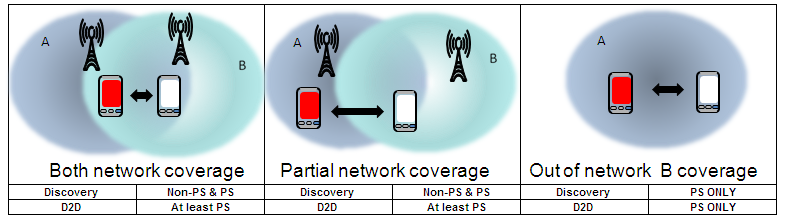
Figure 6.1-1: D2D co-existence / network scenarios in TR36.877
And RAN4 already analysed the detail different points between LTE SL and NR SL operation in a licensed band.
Number of RB size and RB allocation
OLPC power control mechanism
SINR T-put curve
Based on the different points, RAN4 made consensus in WF (R4-2114978) without any additional coexistence evaluations.
In the RAN4 #100-e meeting, RAN4 agreed with option 1 in WF (R4-2114978) to protect B13/n13 and NR legacy Uu system in n14 from n14 PS operation as follow
- Agreements: RAN4 does not see the need for the additional coexistence evaluation to protect B13/n13 UE based on evaluation of the difference of coexisting simulation difference between NR SL UE and LTE SL UE
- Always enable the OLPC in NR SL UE in-coverage: Network always configures the in-coverage NR SL with association to a network cell (e.g (a) and (b) in Figure 1 in Annex) and avoid the configuration where no network cell is associated NR SL UE (e.g the configuration of the (c) and (d) in Figure 1 of the annex)
- NR SL SINR to throughput table is similar with LTE V2X SNIR to throughput table.
- Agreements: RAN4 does not see the need for the additional coexistence evaluation for based on evaluation of the difference of coexisting simulation difference between NR SL UE and LTE SL UE
- NR SL SINR to throughput table is similar with LTE V2X SNIR to throughput table
- RB allocations difference between NR SL and LTE V2X is not key factor for Coexisting simulation result. LTE 2 RB is worst case from interference point of view compared with the at least 10RB allocation for NR SL.
Based on the RAN4 agreements, the PC1/PC3 PS UE will be coexisted with legacy NR system in both in-coverage NW and out-of-coverage NW scenarios.
NR V2X UE could operate in either mode 1 or mode 2 in coverage and mode 2 in out of coverage. The same carrier can be configured both NR V2X UE and NR Uu depending on the network coverage and also depending on the operation mode.
For licensed band, the NR V2X operation can share the same carrier with NR Uu operation:
Scenario#1: V2X operation in the In-Coverage (IC) area with Pcmax confined by P_EMAX associated with a serving cell and moving from in-coverage area to Out-Of-Coverage (OOC) area with Pcmax confined with IE maxTxPower without associated with a serving cell
For above scenario, NR V2X UE will evaluate the IC /OOC criteria when it moves out from the IC to OOC. According to TS 38.304, NR V2X UE will consider it in OOC when there is no cell meeting S-criteria. Current S-criteria definition in TS 38.304 does not consider the NR V2X power class and the In-Coverage area of a NR V2X UE will be the same for UL coverage of a NR Uu UE.
If the power class for NR Uu UE and power class of NR V2X UE operating in OOC area are the same, the UL coverage of both NR V2X UE (when NR V2X UE operating in IC) and NR Uu UE are the same and the UL coverage of NR V2X UE is totally overlapping with its IC area. In such case, when NR V2X UE is moving out from IC area and operating in OOC area, the transmitted signal level received at network should be low enough so there is no (or ignorable) interference from NR V2X UE to NR Uu UE.
If the power class of NR V2X UE is higher than NR Uu UE, the UL coverage of NR V2X UE is partially overlapping with its IC area and in such case, NR V2X UE could operate in OOC area within its UL coverage range. This is illustrated as A2 for PC2 UE in Figure 6.3-1. The UL coverage zone in A2 overlaps with OOC area for PC2 UE. Therefore, the PC2 V2X UE may generate co-channel interference to network when V2X UE operating at out-of-coverage in such a case.
RAN4 agree that such co-channel coexisting issue cannot be guaranteed by RAN4 requirements.
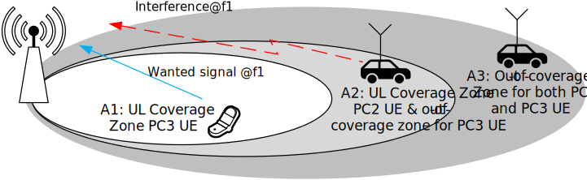
Figure 6.3-1: Co-channel interference scenario #1 (PC2 V2X UE interference to network)
Furthermore, a more generic issue has been identified as shown below in figure 6.3-2:
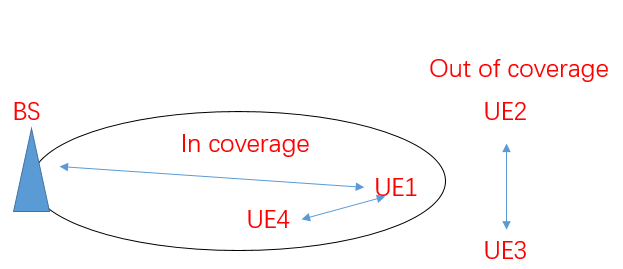
Figure 6.3-2 General co-existence issue
The co-existence simulation study has been done in Rel-16 V2X discussion and corresponding simulation result and conclusion have been captured in the TR 38.886. Specifically, for case 5 as NR V2X UE to NR Uu BS and case 6 as NR Uu UE to NR V2X UE. According to the simulation result, for case 5, if no power control introduced, the NR BS throughput loss is not acceptable and for case 6, no reasonable PRR loss was observed in NR V2X UE. From this perspective, the power control is introduced and the co-channel co-existence of NR Uu BS and NR V2X UE is guaranteed.
For the problem of the co-channel co-existence issue, the abstracted issue is shown in figure 6.3-2 as more general case. For out-of-coverage UE2 and UE3, the SL transmission between this two UEs will have influence on the UE1 to UE4 SL transmission as well as the UE1 to BS NR transmission. This issue is caused by partial coverage scenario. For the NR SL transmission of UE2 to UE3 as aggressor and UE1 to UE4 SL transmission as victim, the UE1 and UE4 share the same BS configured resource pool #1 while for UE2 and UE3 share another resource pool #2 which is pre-configured as these two UEs are out of coverage. If there is no SL transmission between UE1/UE4 and UE2/UE3, then the two resource pool #1 and #2 has no information about any time-frequency resource is used or reserved for each other. In this case, same time-frequency resource might be used for both resource pools and interference will occur. Besides, as the resource pool#1 is configured by the base station, then the UL transmission from UE1 to BS will be acknowledged by the BS and hence configure the resource pool#1 without the time-frequency resource which is conflict to the UL transmission. However, as the resource pool#2 has no information about the cell as well as the resource pool#1, there exist the interference scenario that the out of coverage SL transmission has conflict time-frequency resource with the UE1 to BS UL transmission and reception.
Based on the analysis above, we see the general interference issue which might need more discussion and multiple mechanism can be developed to avoid such interference. From UE implementation perspective, there is also many ways to avoid the interference and whether this method can or need to be standardized still need multiple group to study this issue.
NR SL enhancement is designed to operate in the operating bands in FR1 defined in Table 7.1.1-1.
Table 7.1.1-1 Operating bands in FR1 for NR SL enhancement
| V2X Operating Band | Sidelink (SL) Transmission operating band | Sidelink (SL) Reception operating band | Duplex Mode | Interface | ||||
| FUL_low – FUL_high | FDL_low – FDL_high | |||||||
| n141 | 788 MHz | - | 798 MHz | 788 MHz | - | 798 MHz | HD | PC5 |
| n792 | 4400 MHz | - | 5000 MHz | 4400 MHz | - | 5000 MHz | HD | PC5 |
Note 1: When this band is used for public safety service, the NR band is operated with both in-coverage scenarios and out-of-coverage scenarios. Note 2: NR V2X service is partially operated in this band with NR Uu. |
||||||||
The operating bands and channel bandwidth for NR SL enhancement in FR1 are shown in Table 7.2.1-1. The same (symmetrical) channel bandwidth is specified for both the TX and RX path. The maximum channel bandwidth for SL operation for NR SL enhancement in licensed band is 40MHz.
Table 7.2.1-1 Channel Bandwidth for NR SL enhancement
| V2X band / SCS/ V2X channel bandwidth | |||||||||||
|---|---|---|---|---|---|---|---|---|---|---|---|
| V2X Operating Band | SCS kHz | 5 MHz | 10 MHz | 20 MHz | 30 MHz | 40 MHz | 50 MHz | 60 MHz | 80 MHz | 90 MHz | 100 MHz |
| n14 | 15 | Yes | Yes | ||||||||
| 30 | Yes | ||||||||||
| 60 | |||||||||||
| n79 | 15 | Yes | Yes | Yes | Yes | ||||||
| 30 | Yes | Yes | Yes | Yes | |||||||
| 60 | Yes | Yes | Yes | Yes | |||||||
The NR-ARFCN and channel raster defined in subclause 5.4.2.1 in TS38.101-1 are applied to each licensed operating band for NR SL enhancement.
Channel raster to resource element mapping defined in subclause 5.4.2.2 in TS38.101-1 are applied to each licensed operating band for NR SL enhancement.
The channel raster entries defined in subclause 5.4.2.3 in TS38.101-1 are applied to each licensed operating band for NR SL enhancement.
There is no synchronization raster definition for each licensed operating band for NR SL enhancement.
When NR Public Safety (PS) UE is configured for NR PS sidelink transmissions non-concurrent with NR uplink transmissions for NR V2X operating bands specified in Table 7.1.1-1, the allowed NR PS UE maximum output power shall meet the existing NR Uu maximum output power which was specified in Table 6.2.1-1 in TS38.101-1.
Table 8.1.1-1: Power Class
NR band |
Class 1 (dBm) | Tolerance (dB) | Class 1.5 (dBm) | Tolerance (dB) | Class 2 (dBm) | Tolerance (dB) | Class 3 (dBm) | Tolerance (dB) |
|---|---|---|---|---|---|---|---|---|
| n14 | 311 | +2/-3 | 23 | ±2 | ||||
| NOTE 1: Generally, PC1 UE for Band n14 is not targeted for smartphone form factor. The UE power class 1 requirements for Band n14 are applicable for public safety scenario only. | ||||||||
For NR PS UE supporting SL MIMO, the maximum output power requirements in Table 8.1.1-2 shall be met with the SL MIMO configurations specified in Table 6.2D.1-2 in TS38.101-1. The maximum output power is defined as the sum of the maximum output power from each UE antenna connector. The period of measurement shall be at least one sub frame (1 ms).
Table 8.1.1-2: UE Power Class for SL-MIMO
| NR band | Class 1 (dBm) | Tolerance (dB) | Class 2 (dBm) | Tolerance (dB) | Class 3 (dBm) | Tolerance (dB) | Class 4 (dBm) | Tolerance (dB) |
|---|---|---|---|---|---|---|---|---|
| n14 | 31 | +2/-3 | 23 | +2/-3 |
If the UE transmits on one antenna connector at a time, the requirements in Table 8.1.1-1 shall apply to the active antenna connector.
When NR Public Safety (PS) UE is configured for NR PS sidelink transmissions non-concurrent with NR uplink transmissions for NR V2X operating bands specified in Table 7.1.1-1, the allowed NR PS UE maximum output power reduction for both PC1 and PC3 PS UE shall meet the existing NR V2X MPR requirements for contiguous allocation of PSCCH and PSSCH simultaneous transmission which were specified in clause 6.2E.2 in TS38.101-1.
Table 8.1.2-1 Maximum power reduction (MPR) for contiguous allocation of PSCCH and PSSCH simultaneous transmission for both power class 3 and power class 1
| Modulation | Channel bandwidth/MPR (dB) | ||
|---|---|---|---|
| Outer RB allocations | Inner RB allocations | ||
| CP-OFDM | QPSK | ≤ 4.5 | ≤ 2.5 |
| 16QAM | ≤ 4.5 | ≤ 2.5 | |
| 64 QAM | ≤ 4.5 | ||
| 256 QAM | ≤ 7.0 | ||
For PSFCH with single RB transmission for both PC3 and PC1 NR PS UE, the existing PC3 NR V2X MPR requirements will be applied as follow
MPR_PSFCH = 3.5 dB
For contiguous and non-contiguous allocation for simultaneous PSFCH transmission for both PC3 and PC1 NR PS UE, the existing PC3 NR V2X MPR requirements will be applied as follow
MPR_PSFCH = CEIL {MA_PSFCH, 0.5}
Where MA_PSFCH is defined as follows
MA_PSFCH = 7.5 ; 0.00< NGap/NRB ≤ 0.55
= 12.0 ; 0.55< NGap/NRB ≤1.0
Where,
NGap is the gap RB amount between RBstart and RBend for contiguous and non-contiguous allocation simultaneous PSFCH transmission. (NGap = RBend - RBstart)
CEIL{MA, 0.5} means rounding upwards to closest 0.5dB.
For S-SSB transmission for both PC3 and PC1 NR PS UE, the existing PC3 NR V2X MPR requirements will be applied as follow.
Table 8.1.2-2 Maximum power reduction (MPR) for S-SSB transmission for both power class 3 and power class 1
| Channel | MPRS-SSB (dB) | |
|---|---|---|
| Outer RB allocations | Inner RB allocations | |
| S-SSB | ≤ 6.0 | ≤ 2.5 |
When NR Public Safety (PS) UE is configured for NR PS sidelink transmissions non-concurrent with NR uplink transmissions for NR V2X operating bands specified in Table 7.1.1-1, the allowed NR PS UE additional MPR shall meet the existing NR Uu MPR requirements which were specified in clause 6.2.3 in TS38.101-1.
The required additional SEM levels are shown in Table 8.1.3-1
Table 8.1.3-1: Additional requirements for n14
| ΔfOOB (MHz) |
Channel bandwidth (MHz) / Spectrum emission limit (dBm) | Measurement bandwidth |
||
|---|---|---|---|---|
| 5 | 10 | 15 | ||
| ± 0 – 0.1 | -15 | -18 | -20 | 30 kHz |
| ± 0.1 – 1 | -13 | -13 | -13 | 100 kHz |
| ± 1 – 6 | -13 | -13 | -13 | 1 MHz |
| ± 6 – 10 | -25 | |||
| ± 10 – 15 | -25 | |||
| ± 15 – 20 | -25 | |||
Table 8.1.3-2: Additional maximum power reduction (A-MPR)
| Network signalling label | Requirements (clause) | NR Band | Channel bandwidth (MHz) | Resources blocks (NRB) | A-MPR (dB) |
| NS_01 | Table 5.2-1 | 5, 10, 15, 20, 25, 30, 40, 50, 60, 70, 80, 90, 100 | Table 5.3.2-1 in TS38.101-1 | N/A | |
| NS_06 | Table 8.1.3-1 | n12, n85 | 5, 10, 15 | Table 5.3.2-1 in TS38.101-1 | N/A |
| n14 | 5,10 |
Table 8.1.3-3: Mapping of network signalling label
| NR band | Value of additionalSpectrumEmission | |||||||
|---|---|---|---|---|---|---|---|---|
| 0 | 1 | 2 | 3 | 4 | 5 | 6 | 7 | |
| n14 | NS_01 | NS_06 | ||||||
When NR Public Safety (PS) UE is configured for NR PS sidelink transmissions non-concurrent with NR uplink transmissions for NR V2X operating bands specified in Table 7.1.1-1, the configured Tx power of NR PS UE shall meet the existing NR V2X requirements which were specified in clause 6.2E.4 in TS38.101-1.
When NR Public Safety (PS) UE is configured for NR PS sidelink transmissions non-concurrent with NR uplink transmissions for NR V2X operating bands specified in Table 7.1.1-1, the minimum output power of NR PS UE shall meet the existing NR V2X requirements which were specified in clause 6.3E.1 in TS38.101-1.
Table 8.1.5.1: Minimum output power
Channel bandwidth (MHz) |
Minimum output power (dBm) |
Measurement bandwidth (MHz) |
|---|---|---|
| 5 | -30 | 4.515 |
| 10 | -30 | 9.375 |
When NR Public Safety (PS) UE is configured for NR PS sidelink transmissions non-concurrent with NR uplink transmissions for NR V2X operating bands specified in Table 7.1.1-1, the transmit OFF power of NR PS UE shall meet the existing NR Uu requirements which were specified in clause 6.3.2 in TS38.101-1.
Table 8.1.6-1: Transmit OFF power
Channel bandwidth (MHz) |
Transmit OFF power (dBm) |
Measurement bandwidth (MHz) |
|---|---|---|
| 5 | -50 | 4.515 |
| 10 | -50 | 9.375 |
When NR Public Safety (PS) UE is configured for NR PS sidelink transmissions non-concurrent with NR uplink transmissions for NR V2X operating bands specified in Table 7.1.1-1, the transmit ON/OFF time mask for NR PS UE shall meet the existing NR V2X requirements which were specified in clause 6.3E.3 in TS38.101-1.
When NR Public Safety (PS) UE is configured for NR PS sidelink transmissions non-concurrent with NR uplink transmissions for NR V2X operating bands specified in Table 7.1.1-1, the power control for NR PS UE shall meet the existing NR V2X requirements which were specified in clause 6.3E.4 in TS38.101-1.
When NR Public Safety (PS) UE is configured for NR PS sidelink transmissions non-concurrent with NR uplink transmissions for NR V2X operating bands specified in Table 7.1.1-1, the frequency error by 3 reference sources (gNB, NR SL UE and GNSS) for NR PS UE shall meet the existing NR V2X requirements which were specified in clause 6.4E.1 in TS38.101-1.
When NR Public Safety (PS) UE is configured for NR PS sidelink transmissions non-concurrent with NR uplink transmissions for NR V2X operating bands specified in Table 7.1.1-1, the transmit modulation quality (EVM, carrier leakage, in-band emission and EVM equalizer spectrum flatness) for NR PS UE shall meet the existing NR Uu requirements which were specified in clause 6.4.2 in TS38.101-1.
When NR Public Safety (PS) UE is configured for NR PS sidelink transmissions non-concurrent with NR uplink transmissions for NR V2X operating bands specified in Table 7.1.1-1, the occupied bandwidth for NR PS UE shall meet the existing NR Uu requirements which were specified in clause 6.5.1 in TS38.101-1.
When NR Public Safety (PS) UE is configured for NR PS sidelink transmissions non-concurrent with NR uplink transmissions for NR V2X operating bands specified in Table 7.1.1-1, the out-of band emission requirements for NR PS UE shall meet the existing NR Uu requirements which were specified in clause 6.5.2 in TS38.101-1.
The general SEM requirements for NR Uu in clause 6.5.2.2 in TS38.101-1 shall be applied for NR PS UE.
The additional spectrum emission requirements for NR Uu in clause 6.5.2.3.4 in TS38.101-1 according to the PS UE operating bands specified in Table 7.1.1-1 shall be applied.
When "NS_06" is indicated by serving cell or pre-configured radio parameters, the power of any PS UE emission shall not exceed the levels specified in Table 8.1.3.1.
The NR ACLR requirements for NR Uu in clause 6.5.2.4 in TS38.101-1 shall be applied for NR PS UE.
Table 8.1.12.3-1: NR ACLR measurement bandwidth
| Channel bandwidth | (MHz) | 5,10,15,20,25,30,35,40,45,50 | 60,70,80,90,100 |
|---|---|---|---|
| REF_SCS | (kHz) | 15 | 30 |
| NR ACLR measurement bandwidth | (MHz) | MBW=REF_SCS*(12*NRB+1)/1000 | |
Table 8.1.12.3-2: NR ACLR requirement
| Power class 11 | Power class 1.5 | Power class 2 | Power class 3 | |
|---|---|---|---|---|
| NR ACLR | 37 dB1 | 31 dB | 31 dB | 30 dB |
| NOTE 1: Applicable for power class 1 PS UE operating in Band n14. | ||||
When NR Public Safety (PS) UE is configured for NR PS sidelink transmissions non-concurrent with NR uplink transmissions for NR V2X operating bands specified in Table 7.1.1-1, the general spurious emission requirements for NR PS UE shall meet the existing NR Uu requirements which were specified in clause 6.5.3.1 in TS38.101-1.
When NR Public Safety (PS) UE is configured for NR PS sidelink transmissions non-concurrent with NR uplink transmissions for NR V2X operating bands specified in Table 7.1.1-1, the spurious emission for UE-coexistence requirements for NR PS UE shall meet the existing NR Uu requirements which were specified in clause 6.5.3.2 in TS38.101-1.
Table 8.1.13.2-1: UE-coexistence requirements
| NR Band | Spurious emission for UE co-existence | ||||||
|---|---|---|---|---|---|---|---|
| Protected band | Frequency range (MHz) | Maximum Level (dBm) | MBW (MHz) | NOTE | |||
| n14 | E-UTRA Band 2, 4, 5, 12, 13, 14, 17, 23, 24, 25, 26, 27, 29, 30, 41, 48, 53, 66, 70, 71, 85 | FDL_low | - | FDL_high | -50 | 1 | |
| NR Band n77 | FDL_low | - | FDL_high | -50 | 1 | 2 | |
| Frequency range | 769 | - | 775 | -35 | 0.00625 | 12, 15 | |
| Frequency range | 799 | - | 805 | -35 | 0.00625 | 12, 15 | |
NOTE 2: As exceptions, measurements with a level up to the applicable requirements defined in Table 6.5.3.1-2 are permitted for each assigned NR carrier used in the measurement due to 2nd, 3rd, 4th or 5th harmonic spurious emissions. Due to spreading of the harmonic emission the exception is also allowed for the first 1 MHz frequency range immediately outside the harmonic emission on both sides of the harmonic emission. This results in an overall exception interval centred at the harmonic emission of (2 MHz + N x LCRB x RBsize kHz), where N is 2, 3, 4, 5 for the 2nd, 3rd, 4th or 5th harmonic respectively. The exception is allowed if the measurement bandwidth (MBW) totally or partially overlaps the overall exception interval. NOTE 12: The emissions measurement shall be sufficiently power averaged to ensure a standard deviation < 0.5 dB NOTE 15: These requirements also apply for the frequency ranges that are less than FOOB (MHz) in Table 6.5.3.1-1 from the edge of the channel bandwidth. |
|||||||
When NR Public Safety (PS) UE is configured for NR PS sidelink transmissions non-concurrent with NR uplink transmissions for NR V2X operating bands specified in Table 7.1.1-1, the additional spurious emission requirements for NR PS UE shall meet the existing NR Uu requirements which were specified in clause 6.5.3.3 in TS38.101-1.
When NR Public Safety (PS) UE is configured for NR PS sidelink transmissions non-concurrent with NR uplink transmissions for NR V2X operating bands specified in Table 7.1.1-1, the transmit intermodulation requirements for NR PS UE shall meet the existing NR Uu requirements which were specified in clause 6.5.4 in TS38.101-1.
When NR Public Safety (PS) UE is configured for NR PS sidelink transmissions non-concurrent with NR uplink transmissions for NR V2X operating bands specified in Table 7.1.1-1, the time alginement error requirement for NR PS UE shall meet the existing NR V2X requirements which were specified in clause 6.6E in TS38.101-1.
The reference sensitivity power level REFSENS is the minimum mean power applied to the UE antenna connector at which the throughput shall meet or exceed 95% of the maximum throughput of the reference measurement channels.
The SL enhancement UE REFSENS is defined by the following equation:
REFSENSV2X=kTB + SNRV2X +10log10(LCRB*SCS*12/RX_BW) +( NFV2X+ IM) – Diversity gain
Where
- kTB: Thermal noise level is [-174dBm(kT) + 10*log10(RX BW)]dBm.
- NF: Noise figure. 13 dB is used for LAA and can be reused for NR V2X requirements. Assumed NF is 9dB < 3GHz, NF is 10dB>= 3GHz (e.g B42, n77, n78, n79…) at licensed bands at FR1.
- IM: 2.5 dB is assumed. When the number of RB size is equal to or less than 24RBs, 0.5dB additional relaxation is allowed.
- Target SNR: -0.5 dB
- Diversity gain: 3dB
For the REFSENS requirements of SL operation in the NR refarming bands, the reference sensitivity power level of SL enhancement UE is determined as following equation:
NR_SLREFSENS = NR_UuREFSENS + ∆SNRSL-Uu + ∆ILUL-DL + 10log10(∆LCRB/NRB)
Where,
- NR_SLREFSENS: Reference sensitivity for NR SL with the RMC which reuse the Uu RMC
- NR_UuREFSENS: Reference sensitivity for NR Uu with Uu RMC
- ∆SNRSL-Uu: Difference in the target SNR value between NR Uu and SL Uu
- ∆ILUL-DL: Difference in insertion loss on the UL received path for SL reception compare to the DL received path for NR Uu, and includes the difference of UL filter compared to the DL filter of Band duplexer and two switches on the UL path.
- 10log10(∆LCRB/NRB): Difference RB size between NR Uu RMC and NR SL RMC
The REFSENS requirements for NR SL enhancement are specified in Table 8.2.1-1.
Table 8.2.1-1: Reference sensitivity for NR SL enhancement (PC5)
| NR Operating band / SCS / Channel bandwidth / Duplex-mode | |||||||
|---|---|---|---|---|---|---|---|
| V2X Band | SCS kHz |
5MHz (dBm) |
10MHz (dBm) |
20MHz (dBm) |
30MHz (dBm) |
40MHz (dBm) |
Duplex Mode |
| n14 | 15 | -95.9 | -92.7 | HD | |||
| 30 | -93.0 | ||||||
| 60 | |||||||
Table 8.2.1-2: Sidelink TX configuration for reference sensitivity for NR SL enhancement (PC5)
| NR operating Band / SCS/ Channel bandwidth / NRB / Duplex mode | |||||||
| V2X Band | SCS (kHz) | 5 MHz (dBm) |
10 MHz (dBm) |
20 MHz (dBm) |
30 MHz (dBm) |
40 MHz (dBm) |
Duplex Mode |
| n14 | 15 | 20 | 20 | HD | |||
| 30 | 10 | ||||||
| 60 | |||||||
Maximum input level is defined as the maximum mean power received at the UE antenna port, at which the specified relative throughput shall meet or exceed the minimum requirements for the specified reference measurement channel. The maximum input levels for NR SL enhancement are specified in Table 8.2.2-1.
Table 8.2.2-1: Maximum input level for NR SL enhancement
| Rx Parameter | Units | Channel bandwidth | ||||
|---|---|---|---|---|---|---|
| 5 MHz | 10 MHz | 20 MHz | 30 MHz | 40 MHz | ||
| Power in Transmission Bandwidth Configuration | dBm | -251 | -251 | |||
| -272 | -272 | |||||
NOTE 1: Reference measurement channel is A.7.3 for 64QAM. NOTE 2: Reference measurement channel is A.7.4 for 256QAM. |
||||||
Adjacent Channel Selectivity (ACS) is a measure of a receiver's ability to receive an NR signal at its assigned channel frequency in the presence of an adjacent channel signal at a given frequency offset from the centre frequency of the assigned channel.
Table 8.2.3-1: Adjacent channel selectivity for NR SL enhancement
| Channel bandwidth | ||||||
|---|---|---|---|---|---|---|
| RX parameters | Units | 5 MHz | 10 MHz | 20 MHz | 30 MHz | 40 MHz |
| ACS | dB | 33.0 | 33.0 | |||
Table 8.2.3-2: Test parameters for Adjacent channel selectivity for NR SL enhancement, Case 1
| Rx Parameter | Units | Channel bandwidth | ||||
|---|---|---|---|---|---|---|
| 5 MHz | 10 MHz | 20 MHz | 30 MHz | 40 MHz | ||
| Power in Transmission Bandwidth Configuration | dBm | PREFSENS_V2X + 14 dB | ||||
| PInterferer | dBm | REFSENS +45.5dB | REFSENS +45.5dB | |||
| BWInterferer | MHz | 5 | 5 | |||
| FInterferer (offset) | MHz | 5.0 / -5.0 |
7.5 / -7.5 |
|||
NOTE 1: The interferer is QPSK modulated PSSCH containing data and reference symbols. Normal cyclic prefix is used. NOTE 2: The absolute value of the interferer offset Finterferer (offset) shall be further adjusted to MHz with SCS the sub-carrier spacing of the wanted signal in MHz. The interferer is an NR signal with 15 kHz SCS. |
||||||
Table 8.2.3-3: Test parameters for Adjacent channel selectivity for NR SL enhancement, Case 2
| Rx Parameter | Units | Channel bandwidth | ||||
|---|---|---|---|---|---|---|
| 5 MHz | 10 MHz | 20 MHz | 30 MHz | 40 MHz | ||
| Power in Transmission Bandwidth Configuration | dBm | -56.5 | -56.5 | |||
| PInterferer | dBm | -25 | ||||
| BWInterferer | MHz | 5 | 5 | |||
| FInterferer (offset) | MHz | 5.0 / -5.0 |
7.5 / -7.5 |
|||
NOTE 1: The interferer is QPSK modulated PSSCH containing data and reference symbols. Normal cyclic prefix is used. NOTE 2: The absolute value of the interferer offset Finterferer (offset) shall be further adjusted to MHz with SCS the sub-carrier spacing of the wanted signal in MHz. The interferer is an NR signal with 15 kHz SCS. |
||||||
For NR SL enhancement, RAN4 reuse the in-band blocking requirements for NR Uu as shown in Table 8.2.4.1-1 and Table 8.2.4.1-2.
Table 8.2.4.1-1: In band blocking parameters for NR SL enhancement
| RX parameter | Units | Channel bandwidth | ||||
|---|---|---|---|---|---|---|
| 5 MHz | 10 MHz | 20 MHz | 30 MHz | 40 MHz | ||
| Power in transmission bandwidth configuration | dBm | PREFSENS_V2X + channel bandwidth specific value below | ||||
| dB | 6 | 6 | ||||
| BWinterferer | MHz | 5 | ||||
| FIoffset, case 1 | MHz | 7.5 | ||||
| FIoffset, case 2 | MHz | 12.5 | ||||
| NOTE 1: The interferer is QPSK modulated PSSCH containing data and reference symbols. Normal cyclic prefix is used. | ||||||
Table 8.2.4.1-2: In-band blocking for NR SL enhancement
NR band |
Parameter | Unit | Case 1 | Case 2 | |
|---|---|---|---|---|---|
| n14 | PInterferer | dBm | -56 | -44 | |
| FInterferer (offset) | MHz | -BW/2 – FIoffset,case 1 & BW/2 + FIoffset,case 1 |
≤-BW/2 – FIoffset,case 2 & ≥BW/2 + FIoffset,case 2 |
||
| FInterferer | MHz | NOTE 2 | FDL_low – 15 to FDL_high + 15 |
||
NOTE 1: For certain bands, the unwanted modulated interfering signal may not fall inside the UE receive band, but within the first 15 MHz below or above the UE receive band. NOTE 2: For each carrier frequency the requirement is valid for two frequencies:
NOTE 3: FInterferer range values for unwanted modulated interfering signal are interferer center frequencies NOTE 4: The absolute value of the interferer offset Finterferer (offset) shall be further adjusted to MHz with SCS the sub-carrier spacing of the wanted signal in MHz. The interferer is an NR signal with 15 kHz SCS. |
|||||
Out-of-band band blocking in existing specification for licensed bands is defined for an unwanted CW interfering signal falling more than 30 MHz below or above the UE receive band. For the first 15 MHz below or above the UE receive band the appropriate in-band blocking or adjacent channel selectivity shall be applied.
For NR SL enhancement, RAN4 reuse the out-of-band blocking requirements for NR Uu as shown in Table 8.2.4.2-1 and Table 8.2.4.2-2.
Table 8.2.4.2-1: Out-of-band blocking parameters for NR SL enhancement
| RX parameter | Units | Channel bandwidth | ||||
|---|---|---|---|---|---|---|
| 5 MHz | 10 MHz | 20 MHz | 30 MHz | 40 MHz | ||
| Power in transmission bandwidth configuration | dBm | PREFSENS_V2X + channel bandwidth specific value below | ||||
| dB | 6 | 6 | ||||
| NOTE: Reference measurement channel is A.7.2. | ||||||
Table 8.2.4.2-2: Out of band blocking for NR SL enhancement
| NR band | Parameter | Units | Range 1 | Range 2 | Range 3 |
|---|---|---|---|---|---|
| n14 | Pinterferer | dBm | -44 | -30 | -15 |
| Finterferer (CW) | MHz | -60 < f – FDL_low < -15 or 15 < f – FDL_high < 60 |
-85 < f – FDL_low ≤ -60 or 60 ≤ f – FDL_high < 85 |
1 ≤ f ≤ FDL_low – 85 or FDL_high + 85 ≤ f ≤ 12750 |
|
| NOTE 1: The power level of the interferer (PInterferer) for Range 3 shall be modified to -20 dBm for FInterferer > 4400 MHz. | |||||
Spurious response is a measure of the receiver's ability to receive a wanted signal on its assigned channel frequency without exceeding a given degradation due to the presence of an unwanted CW interfering signal at any other frequency at which a response is obtained.
For NR SL enhancement, RAN4 reuse the spurious response for NR Uu as shown in Table 8.2.5-1 and Table 8.2.5-2.
Table 8.2.5-1: Spurious response parameters for NR SL enhancement
| RX parameter | Units | Channel bandwidth | ||||
|---|---|---|---|---|---|---|
| 5 MHz | 10 MHz | 20 MHz | 30 MHz | 40 MHz | ||
| Power in transmission bandwidth configuration | dBm | PREFSENS_V2X + channel bandwidth specific value below | ||||
| dB | 6 | 6 | ||||
| NOTE 1: Reference measurement channel is A.7.2 | ||||||
Table 8.2.5-2: Spurious response for NR SL enhancement
| Parameter | Unit | Level |
| PInterferer (CW) | dBm | -44 |
| FInterferer | MHz | Spurious response frequencies |
Intermodulation response rejection is a measure of the capability of the receiver to receive a wanted signal on its assigned channel frequency in the presence of two or more interfering signals which have a specific frequency relationship to the wanted signal. The wide band intermodulation requirement is defined using modulated NR carrier and CW signal as interferer.
For NR SL enhancement, RAN4 reuse the intermodulation characteristics for NR Uu as shown in Table 8.2.6-1.
Table 8.2.6-1: Wide band intermodulation for NR SL enhancement
| NR band | Rx parameter | Units | Channel bandwidth | ||||
|---|---|---|---|---|---|---|---|
| 5 MHz | 10 MHz | 20 MHz | 30 MHz | 40 MHz | |||
| n14 | Power in Transmission Bandwidth Configuration | dBm | PREFSENS_V2X + channel bandwidth specific value below | ||||
| 6 | 6 | ||||||
| PInterferer 1 (CW) | dBm | -46 | |||||
| PInterferer 2 (Modulated) | dBm | -46 | |||||
| BWInterferer 2 | MHz | 5MHz | |||||
| FInterferer 1 (Offset) | MHz | -BW/2 – 7.5 / +BW/2 + 7.5 |
|||||
| FInterferer 2 (Offset) | MHz | 2 * FInterferer 1 | |||||
NOTE 1: Reference measurement channel is A.7.2. NOTE 2: The interferer is QPSK modulated PSSCH containing data and reference symbols. Normal cyclic prefix is used. |
|||||||
According to the coexistence simulation results and analysis, RAN4 made consensus for the NR SL enhancement UE will be coexisted with legacy NR system for PC2 V2X UE, intr-abnd con-current V2X UE and NR PS UE with sidelink operation.
For the leftover issues, RAN4 studied the coexistence evaluation in section 5.1.1 and specified the PC2 V2X UE RF requirements in section 5.1.2 and 5.1.3.
To support intra-band con-current V2X UE operation, RAN4 studied coexistence evaluation in section 5.2.2 and specified RF requirements in section 5.2.3 and 5.2.4.
The SL enhancement for advanced V2X service and public safety and other commercial use case, RAN4 evaluated the coexistence analysis in section 6.1 and specified the NR V2X UE RF requirements to support the following scenarios.
- Specify operating NR V2X bands and system parameters (Section 7)
- Specify RF core requirements (Section 8)
- Specify Tx requirements including A-MPR requirements for PC1/PC3 PS UE
- Specify Rx requirements
Above RF core requirements for NR SL enhancement, RAN4 will specify NR SL enhancement UE RF core requirements in TS38.101-1 for NR PC2 V2X operation, intra-band con-current V2X UE and PS UE using sidelink in FR1.
| Change history | |||||||
| Date | Meeting | TDoc | CR | Rev | Cat | Subject/Comment | New version |
| 2021-01 | RAN4 #98e | R4-2100282 | TR38.xxx v0.0.1: TR skeleton for SL enhancement | 0.0.1 | |||
| 2021-04 | RAN4 #98bis-e | R4-2104969 | TR38.785 v0.1.0: TR Update for SL enhancement in Rel-17 | 0.1.0 | |||
| 2021-05 | RAN4 #99-e | R4-2108115 | TR38.785 v0.2.0: TR Update for SL enhancement in Rel-17 | 0.2.0 | |||
| 2021-08 | RAN4 #100-e | R4-2112767 | TR38.785 v0.3.0: TR Update for SL enhancement in Rel-17 | 0.3.0 | |||
| 2021-11 | RAN4 #101-e | R4-2118081 | TR38.785 v0.4.0: TR Update for SL enhancement in Rel-17 | 0.4.0 | |||
| 2022-01 | RAN4 #101-bis-e | R4-2200833 | TR38.785 v0.5.0: TR Update for SL enhancement in Rel-17 | 0.5.0 | |||
| 2022-03 | RAN4 #102-e | R4-2204152 | TR38.785 v1.0.0: TR Update for SL enhancement in Rel-17 | 1.0.0 | |||
| 2022-05 | RAN4 #103-e | R4-2207963 | TR38.785 v1.1.0: TR Update for SL enhancement in Rel-17 | 1.1.0 | |||
| 2022-05 | RAN4 #103-e | R4-2207966 | TR38.785 v1.2.0: TR Update for SL enhancement in Rel-17 | 1.2.0 | |||
| 2022-06 | RAN #96 | RP-221185 | TR38.785 v1.3.0: TR for SL enhancement in Rel-17 - Presented for 1-step approval at RAN plenary |
1.3.0 | |||
| Change history | |||||||
|---|---|---|---|---|---|---|---|
| Date | Meeting | TDoc | CR | Rev | Cat | Subject/Comment | New version |
| 2022-06 | RAN#96 | Approved by plenary – Rel-17 spec under change control | 17.0.0 | ||||